Texto extraído da edição fornecida, sem atualização normativa. Consulte a página original para conferir tabelas, formulários e instruções ilustradas. A numeração dos links corresponde à página do arquivo PDF.
AVERBAÇÃO DO TEMPO DE
SERVIÇO/CONTRIBUIÇÃO e CONVERSÃO
DE TEMPO ESPECIAL EM COMUM -
MÓDULO SERVIDOR
DAP-06.021
Ver página original — tabelas, imagens e diagramas
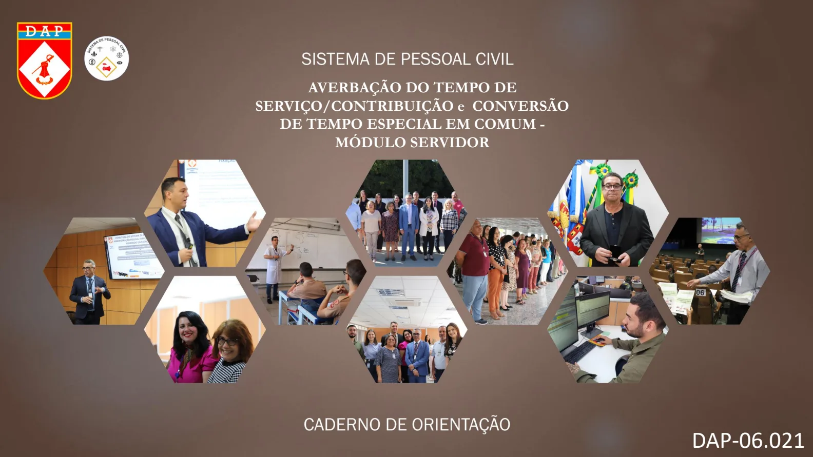
Caderno de Orientação nº DAP-06.021 - Averbação do Tempo de Serviço/Contribuição e Conversão de Tempo Especial em Comum - MÓDULO SERVIDOR
Ver página original — tabelas, imagens e diagramas
Constituição Federal da República
Federativa do Brasil, art. 201.
Lei nº 9.796, de 5 de maio de 1999.
Lei nº 8.112, de 11 de dezembro de
1990 e suas alterações.
Decreto nº 10.188, de 20 de dezembro
de 2019.
Portaria MTP nº 1.467, de 2 de
junho de 2022.
Portaria SGP/SEDGG/ME nº 10.360,
de 6 de dezembro de 2022.
1. LEGISLAÇÃO BÁSICA 3
É dever do servidor público, da Organização Militar (OM) e da
Região Militar (RM) ler e acompanhar a atualização da legislação
que se refere aos assuntos tratados neste Caderno de Orientação.
São referências de legislação:
Caderno de Orientação nº DAP-06.021 - Averbação do Tempo de Serviço/Contribuição e Conversão de Tempo Especial em Comum - MÓDULO SERVIDOR
Ver página original — tabelas, imagens e diagramas
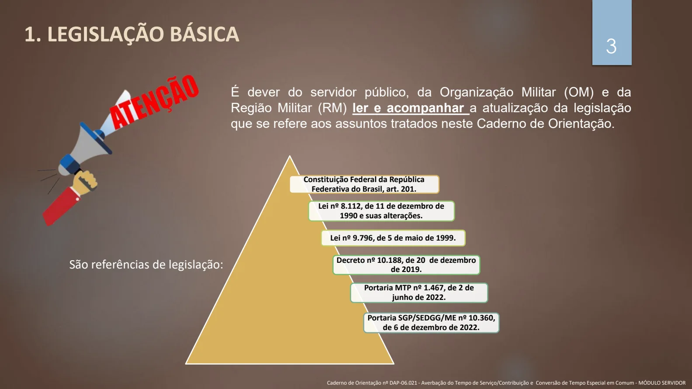
2. CONCEITOS:
.
Tempo de efetivo exercício no serviço público: o tempo de exercício do cargo, efetivo
ou comissionado, posto militar, função, contratação temporária ou emprego público,
ainda que descontínuo, na Administração direta, autárquica ou fundacional, e indireta
e nos conselhos de fiscalização profissional de qualquer dos entes federativos.¹
Tempo de contribuição: período em que o servidor público federal contribuiu para um dos Regimes Próprios
de Previdência Social - RPPS, ao Regime Geral de Previdência Social - RGPS - ou ao Sistema de Proteção Social
dos Militares – SPSM.¹
Averbação de tempo de serviço/contribuição: registro nos assentamentos funcionais e nos Sistemas Estruturantes
de Gestão de Pessoas da Administração Pública Federal, para fins previdenciários, dos períodos contributivos
realizados ao Regime Geral de Previdência Social, a regime próprio de previdência social ou a sistema de proteção
social dos militares para contagem recíproca entre os regimes.¹
¹ PORTARIA SGP/SEDGG/ME Nº 10.360, DE 6 DE DEZEMBRO DE 2022, art. 3º, incisos VII, VIII e IX.
Conversão de tempo especial em comum: é a possibilidade de obter um acréscimo no tempo de
contribuição daqueles contribuintes que trabalharam com exposição a condições especiais capazes de
prejudicar a sua saúde.
Caderno de Orientação nº DAP-06.021 - Averbação do Tempo de Serviço/Contribuição e Conversão de Tempo Especial em Comum - MÓDULO SERVIDOR
Ver página original — tabelas, imagens e diagramas
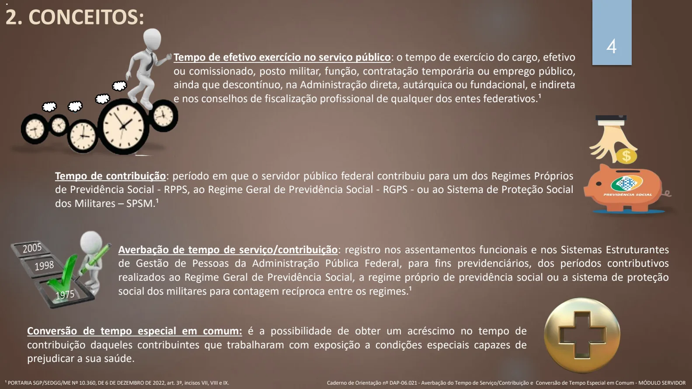
2. CONCEITOS (cont.):
.
Certidão por Tempo de Contribuição - CTC: é o documento hábil para viabilizar a contagem recíproca de
tempo de contribuição, cabendo ao regime de origem fornecê-la por solicitação do segurado. A
instrução do procedimento de averbação compete ao regime previdenciário de atual vinculação do
segurado. Portanto, em regra, a averbação de tempo é uma operação voluntária e de iniciativa do
interessado.²
Desaverbação: desfazimento das inserções realizadas nos assentamentos funcionais do servidor
e dos Sistemas Estruturantes de Gestão de Pessoas da Administração Pública Federal dos
períodos contributivos realizados ao Regime Geral de Previdência Social, ao Regime Próprio de
Previdência Social ou ao Sistema de Proteção Social dos Militares para contagem recíproca entre
os regimes, desde que não tenha gerado benefícios previdenciários ou vantagens
remuneratórias.²
1995
1998
2001
2003
2005
DESAVERBAR
2007
Certidão de Tempo de Serviço Militar - CTSM, é o documento fornecido pelo órgão responsável
pela gestão do Sistema de Proteção Social dos Militares - SPSM, quando for o caso de tempo de
serviço militar exercido nas atividades de que tratam os arts. 42, 142 e 143 da Constituição
Federal.³
² PORTARIA SGP/SEDGG/ME Nº 10.360, DE 6 DE DEZEMBRO DE 2022, art. 3º, incisos X e XI .
³ PORTARIA SGP/SEDGG/ME Nº 10.360, DE 6 DE DEZEMBRO DE 2022, Anexo II, art. 10, inciso II. Caderno de Orientação nº DAP-06.021 - Averbação do Tempo de Serviço/Contribuição e Conversão de Tempo Especial em Comum - MÓDULO SERVIDOR
Ver página original — tabelas, imagens e diagramas
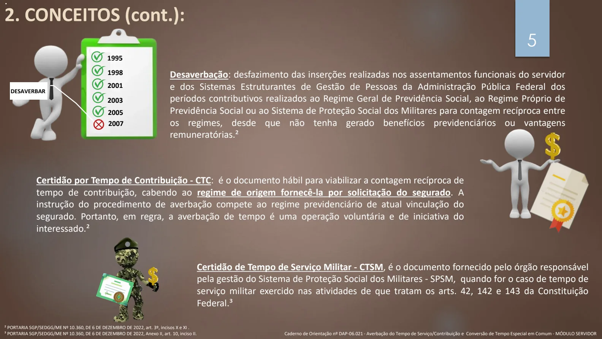
....... .......
.......
.......
Caderno de Orientação nº DAP-06.021 - Averbação do Tempo de Serviço/Contribuição e Conversão de Tempo Especial em Comum - MÓDULO SERVIDOR
Ver página original — tabelas, imagens e diagramas
Contagem e averbação de tempo
PDF · p. 7a) Para fins de aposentadoria, será assegurada a contagem recíproca do tempo de
contribuição entre o Regime Geral de Previdência Social - RGPS e os Regimes Próprios
de Previdência Social - RPPS, e destes entre si, observada a compensação financeira,
de acordo com os critérios estabelecidos em lei.5
b) O tempo de serviço militar obrigatório ou exercido nas atividades das Forças Armadas, nas
Polícias Militares e nos Corpos de Bombeiros Militares, e o tempo de contribuição ao RGPS ou a
RPPS terão contagem recíproca para fins de inativação militar ou aposentadoria.6
c) Havendo concomitância de tempo da CTC a ser averbado com o tempo contributivo do
RPPS da União, a SPC/DAP deverá restituir a CTC ao servidor para que solicite ao regime
emissor a sua substituição sem a concomitância constatada.7
RPPS
RGPS
5Constituição da República Federativa do Brasil, art. 201, § 9º
6Constituição da República Federativa do Brasil, art. 201, § 9º-A
7Portaria SGP/SEDGG/ME nº 10.360, de 6 de dezembro de 2022, Anexo II, art. 10, § 2º. Caderno de Orientação nº DAP-06.021 - Averbação do Tempo de Serviço/Contribuição e Conversão de Tempo Especial em Comum - MÓDULO SERVIDOR
Ver página original — tabelas, imagens e diagramas
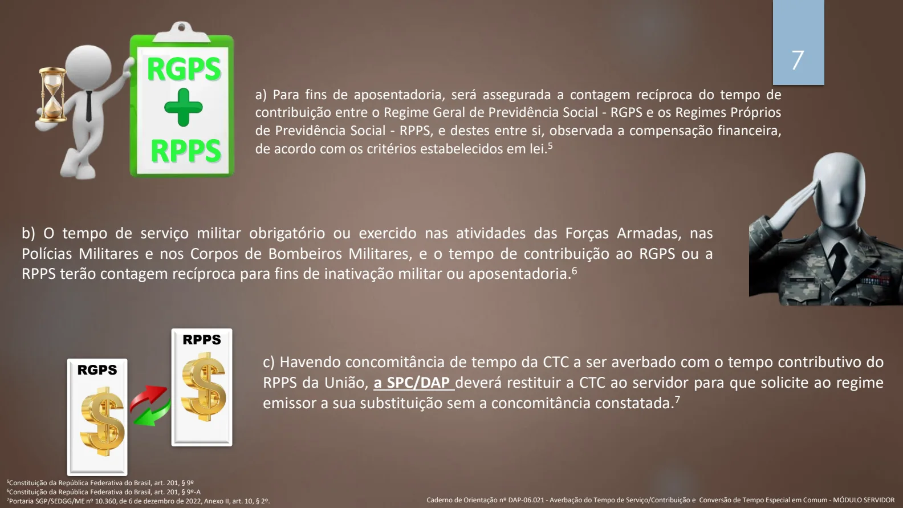
Contagem e averbação de tempo
PDF · p. 88d) A apuração do tempo de serviço será feita em dias, que serão convertidos
em anos, considerado o ano como de trezentos e sessenta e cinco dias.8
k) A averbação pelo RPPS da União do tempo de contribuição constante de CTC emitida pelo INSS
SOMENTE pode ser efetivada em um único cargo ocupado pelo servidor, ainda que, no período
certificado, tenha havido filiação ao RGPS pelo exercício de múltiplas atividades decorrentes de
empregos públicos, ou privados, ou cargos públicos.9
Pode ser efetivada a averbação de CTC Única, emitida pelo INSS, com divisão e destinação do
tempo de contribuição para dois órgãos distintos conforme previsão do art. 130, § 7º, do
Regulamento da Previdência Social, aprovado pelo Decreto nº 3.048, de 6 de maio de 1999.
EXCEÇÃO:
8 Lei nº 8.112, de 11 de dezembro de 1990, art. 101
9 PORTARIA SGP/SEDGG/ME Nº 10.360, de 6 de dezembro de 2022, Anexo II, art. 13 e seu parágrafo único.
l) É lícita a averbação de tempo contributivo do RGPS realizado durante a aposentadoria do
servidor, para que, em caso de reversão, o servidor tenha interesse na obtenção de nova
aposentadoria pelas regras então vigentes no momento da concessão do segundo benefício.
Caderno de Orientação nº DAP-06.021 - Averbação do Tempo de Serviço/Contribuição e Conversão de Tempo Especial em Comum - MÓDULO SERVIDOR
Ver página original — tabelas, imagens e diagramas
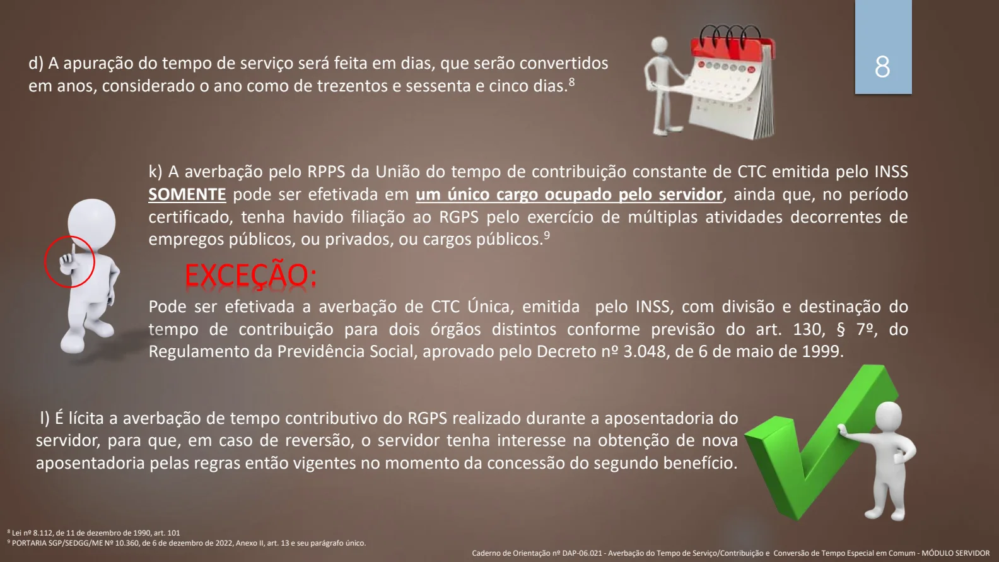
Contagem e averbação de tempo
PDF · p. 9h) SÃO VÁLIDAS, para fins de averbação de tempo de contribuição e compensação financeira, as
certidões de tempo de serviço e de contribuição e relações de remunerações de contribuição
emitidas:10
• em data anterior à publicação da Portaria MPS nº 154, de 15 de maio de 2008, pelos órgãos da
Administração Pública dos Estados, Distrito Federal e Municípios, suas autarquias, fundações ou
unidade gestoras dos RPPS, relativamente ao tempo de serviço e de contribuição para esses
regimes;
• nos termos da Portaria MPS nº 154, de 15 de maio de 2008, durante sua vigência; e
• em data anterior à vigência da Portaria MTP nº 1.467, de 02 de junho de 2022, quanto ao tempo
de serviço militar.
i) VEDAÇÕES:11
• o reconhecimento, pelo RPPS da União, de tempo de natureza especial exercido com filiação a outro RPPS ou
ao RGPS, ainda que à vista de outros documentos comprobatórios apresentados pelo servidor, inclusive se o
tempo de natureza especial tenha sido prestado ao ente federativo instituidor a qualquer tempo, mas com
filiação ao RGPS.
• a contagem do tempo de ex-empregado público amparado pelo art. 243 da Lei nº 8.112, de 11 de dezembro
de 1990, pelo RPPS da União, sem a emissão da CTC correspondente pelo Instituto Nacional do Seguro Social
- INSS.
j) Encontram-se válidas as averbações automáticas realizadas até 18 de janeiro de 2019,
que geraram a concessão de aposentadoria e abono de permanência até essa data.
10 PORTARIA SGP/SEDGG/ME Nº 10.360, de 6 de dezembro de 2022, Anexo II, art. 10, § 3º.
11 PORTARIA SGP/SEDGG/ME Nº 10.360, de 6 de dezembro de 2022, Anexo II, art. 11, 12 e seu parágrafo único. Caderno de Orientação nº DAP-06.021 - Averbação do Tempo de Serviço/Contribuição e Conversão de Tempo Especial em Comum - MÓDULO SERVIDOR
Ver página original — tabelas, imagens e diagramas
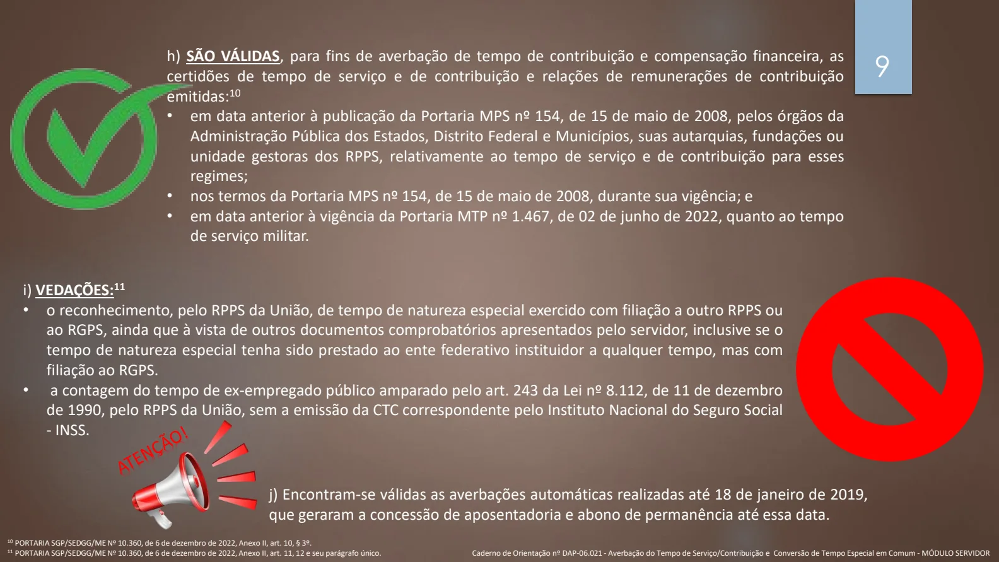
Contagem e averbação de tempo
PDF · p. 10O TEMPO DE CONTRIBUIÇÃO federal, estadual ou municipal será
contado para EFEITO DE APOSENTADORIA e o TEMPO DE SERVIÇO
correspondente para EFEITO DE DISPONIBILIDADE, mediante
apresentação de declaração fornecida pelo
órgão/entidade, devendo ser apresentada a certidão original ou
digital para fins de averbação.
O tempo prestado em ATIVIDADE PRIVADA, cujo recolhimento previdenciário é efetuado ao
INSS, será contado apenas para aposentadoria, mediante apresentação de CTC fornecida pelo
INSS, devendo ser apresentada a certidão original ou digital para fins de averbação.
O tempo de contribuição de servidores afastados para servir a organismo
internacional será contado para fins de aposentadoria, desde que haja o
respectivo recolhimento ao Plano de Seguridade Social do Servidor – PSS.
Caderno de Orientação nº DAP-06.021 - Averbação do Tempo de Serviço/Contribuição e Conversão de Tempo Especial em Comum - MÓDULO SERVIDOR
Ver página original — tabelas, imagens e diagramas
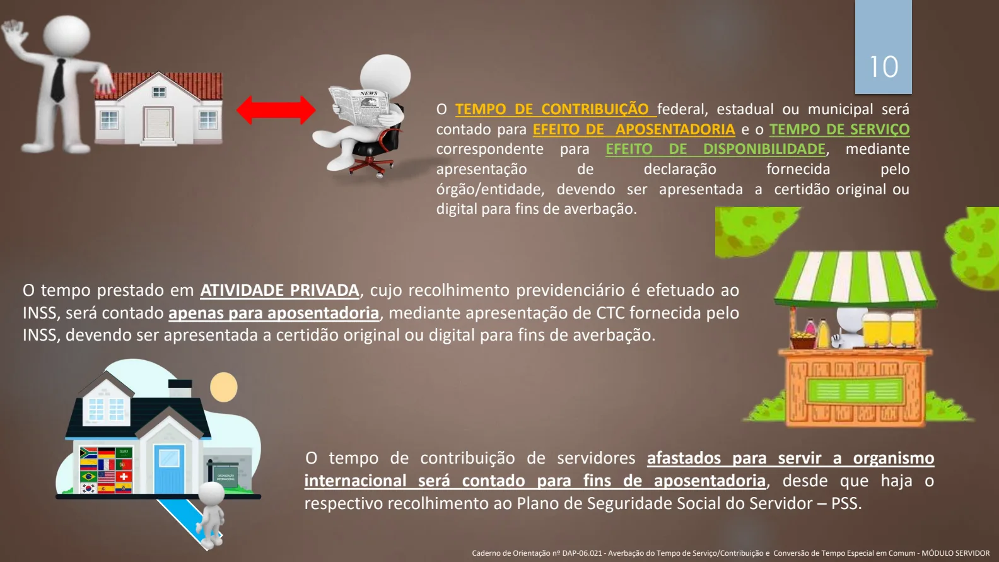
Contagem e averbação de tempo
PDF · p. 11O tempo de contribuição de servidores cedidos sem ônus, na forma prevista
no artigo 102, II e III da Lei nº 8.112/90, será considerado desde que o
interessado apresente certidão desse período por ocasião de seu retorno.
O tempo retribuído mediante RECIBO NÃO É contado para nenhum efeito.
Não se averba tempo de serviço prestado gratuitamente, pois não gera
recolhimentos previdenciários.
VOLUNTÁRIOS
Caderno de Orientação nº DAP-06.021 - Averbação do Tempo de Serviço/Contribuição e Conversão de Tempo Especial em Comum - MÓDULO SERVIDOR
Ver página original — tabelas, imagens e diagramas
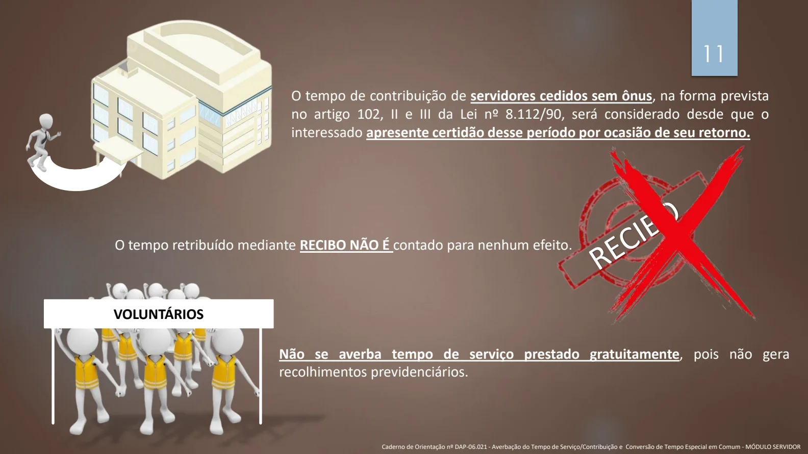
Contagem e averbação de tempo
PDF · p. 12O tempo de serviço/contribuição averbado e que já produziu efeitos jurídicos, em
razão de um cargo, não poderá ser desaverbado com vistas a outro cargo.
Não é permitida a desaverbação de tempo de serviço/contribuição prestado ao Comando do Exército,
enquanto o servidor continuar em exercício na Instituição.
Para solicitar a Certidão de Tempo de
Contribuição (CTC) junto ao INSS, o
servidor deverá ligar no número 135 ou
acessar meu.inss.gov.br
Caderno de Orientação nº DAP-06.021 - Averbação do Tempo de Serviço/Contribuição e Conversão de Tempo Especial em Comum - MÓDULO SERVIDOR
O Anexo B deste Caderno de Orientações contém perguntas e
respostas sobre o assunto e pode ajudá-lo a dirimir dúvidas.
Ver página original — tabelas, imagens e diagramas
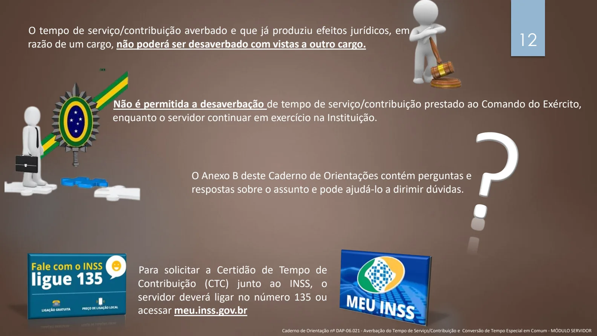
Contagem e averbação de tempo
PDF · p. 13Caderno de Orientação nº DAP-06.021 - Averbação do Tempo de Serviço/Contribuição e Conversão de Tempo Especial em Comum - MÓDULO SERVIDOR
Ver página original — tabelas, imagens e diagramas
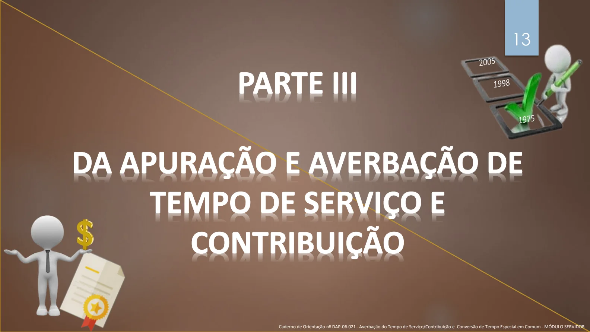
Contagem e averbação de tempo
PDF · p. 142. A averbação de tempo de serviço e contribuição efetuada nos assentamentos funcionais do servidor e
nos Sistemas Estruturantes de Gestão de Pessoas da Administração Pública Federal, à vista de
documentação apresentada, não é, em nenhuma medida, elemento constitutivo de direito, tendo por
objetivo apenas abreviar, em momento subsequente, o trâmite burocrático necessário ao reconhecimento
de benefícios previdenciários pela Administração.
3. O prazo decadencial para a administração rever os seus atos quanto à averbação do tempo de serviço/contribuição é de 5
(cinco) anos, nos termos do art. 54 da Lei nº 9.784, de 1999, fruindo a partir do registro dos atos pelo Tribunal de Contas da
União.
4. O prazo decadencial supramencionado será contado de forma individualizada em cada benefício previdenciário de
aposentadoria e pensão e enquanto não efetivado este registo pelo Tribunal de Contas da União, não há que se falar em
decurso de prazo decadencial.
1. A apuração do tempo de serviço e contribuição, para fins de aposentadoria e pensão, será realizada observando os
seguintes pressupostos:
a) será realizada conforme estabelecido na legislação de regência; e
b) deverá observar os entendimentos firmados pelo Órgão Central do SIPEC, em relação à legislação específica vigente
no momento do preenchimento dos requisitos para a aposentadoria ou instituição da pensão.
Por que SOLICITAR a averbação?
A averbação é muito importante para que você consiga se aposentar na data correta.
Caderno de Orientação nº DAP-06.021 - Averbação do Tempo de Serviço/Contribuição e Conversão de Tempo Especial em Comum - MÓDULO SERVIDOR
Ver página original — tabelas, imagens e diagramas
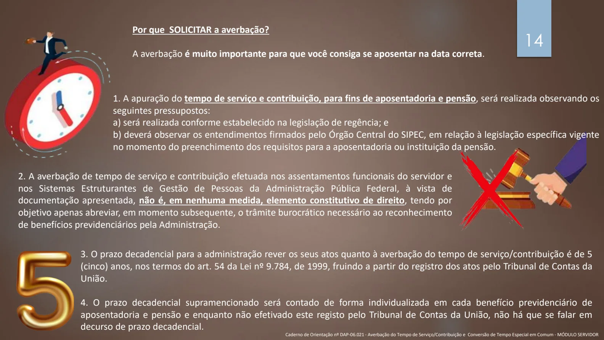
Contagem e averbação de tempo
PDF · p. 15Caderno de Orientação nº DAP-06.021 - Averbação do Tempo de Serviço/Contribuição e Conversão de Tempo Especial em Comum - MÓDULO SERVIDOR
Ver página original — tabelas, imagens e diagramas
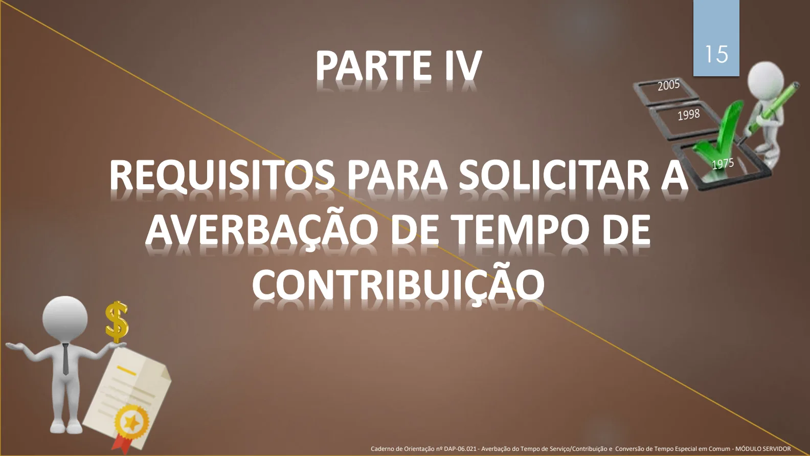
Requisitos para solicitar
PDF · p. 161. REQUISITOS PARA SOLICITAR:
1. Ter prestado serviço a
órgãos/entidade públicas ou
instituições privadas.
2. Não ter averbado o tempo de
serviço em outro órgão/entidade
pública ou perante a Previdência
Social.
3. Solicitar aos órgãos/entidades
competentes: a CTC (INSS) , ou a declaração
(órgão/entidade em que contribuiu) ou
a CTSM (órgão militar).
4. O SERVIDOR deverá requerer junto à
OM, e fazer constar os
documentos necessários e descritos na e
Parte VI deste Caderno de Orientação.
Caderno de Orientação nº DAP-06.021 - Averbação do Tempo de Serviço/Contribuição e Conversão de Tempo Especial em Comum - MÓDULO SERVIDOR
Ver página original — tabelas, imagens e diagramas
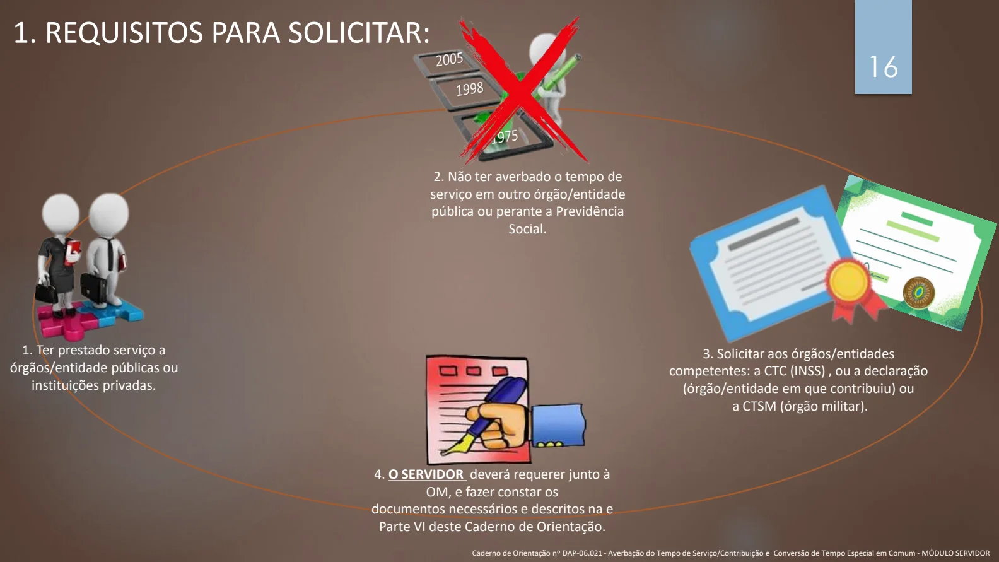
Requisitos para solicitar
PDF · p. 17*PORTARIA SGP/SEDGG/ME Nº 10.360, DE 6 DE DEZEMBRO DE 2022 – Anexo II, Capítulo III, art. 13
A averbação pelo RPPS da União do tempo de contribuição constante de CTC emitida pelo INSS
SOMENTE PODE SER EFETIVADA EM UM ÚNICO CARGO OCUPADO PELO SERVIDOR, ainda que, no
período certificado, tenha havido filiação ao RGPS pelo exercício de múltiplas atividades decorrentes
de empregos públicos ou privados ou cargos públicos.
EXCEÇÃO!
A emissão, pelo INSS, de CTC única com divisão e destinação do tempo de contribuição
para dois órgãos distintos conforme previsão do art. 130, § 7º, do Regulamento da
Previdência Social, aprovado pelo Decreto nº 3.048, de 6 de maio de 1999.
2. OBSERVAÇÕES:
Caderno de Orientação nº DAP-06.021 - Averbação do Tempo de Serviço/Contribuição e Conversão de Tempo Especial em Comum - MÓDULO SERVIDOR
Ver página original — tabelas, imagens e diagramas
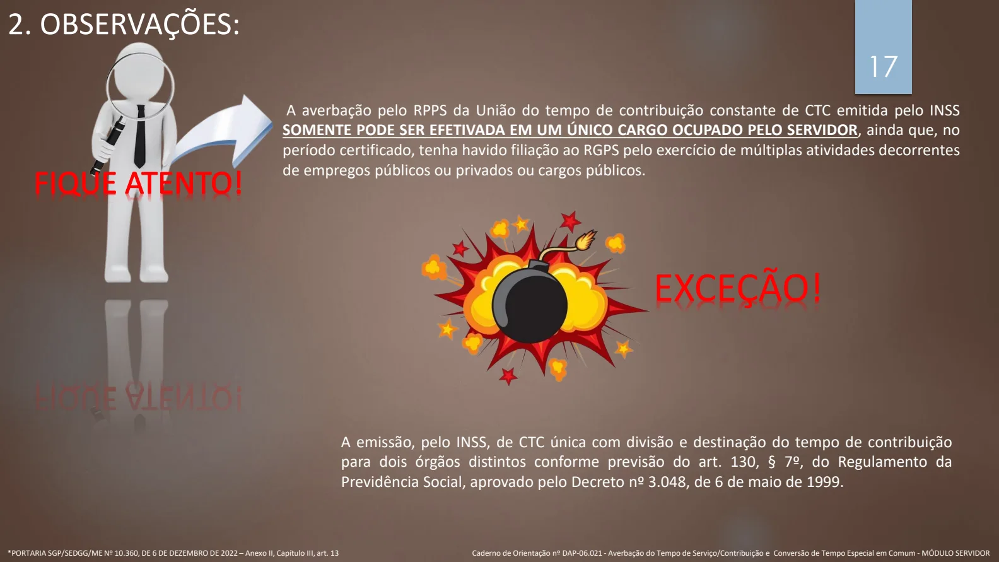
Requisitos para solicitar
PDF · p. 18Caderno de Orientação nº DAP-06.021 - Averbação do Tempo de Serviço/Contribuição e Conversão de Tempo Especial em Comum - MÓDULO SERVIDOR
Ver página original — tabelas, imagens e diagramas
Conversão de tempo especial em comum
PDF · p. 191. CONVERSÃO DE TEMPO ESPECIAL EM COMUM:
Os servidores públicos federais
que exerceram atividades em
condições especiais prejudiciais à
saúde ou à integridade física, ATÉ
o dia 13 de novembro de 2019,
PODERÃO ter esse tempo
convertido em tempo comum
para fins de aposentadoria e
contagem recíproca de tempo de
contribuição.
Marco
temporal
Salvo decisão judicial expressa
em contrário, é VEDADA a
conversão de tempo especial em
comum para períodos laborados
com efetiva exposição a agentes
químicos, físicos e biológicos
prejudiciais à saúde, ou
associação desses agentes A
PARTIR de 13 de novembro de
2019.
*PORTARIA SGP/SEDGG/ME Nº 10.360, DE 6 DE DEZEMBRO DE 2022 – Anexo II, Capítulo IV, art. 41
1.1. Marco temporal:
ANTES DEPOIS
Caderno de Orientação nº DAP-06.021 - Averbação do Tempo de Serviço/Contribuição e Conversão de Tempo Especial em Comum - MÓDULO SERVIDOR
Ver página original — tabelas, imagens e diagramas
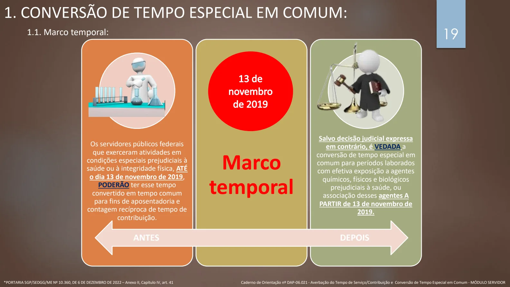
Conversão de tempo especial em comum
PDF · p. 201. CONVERSÃO DE TEMPO ESPECIAL EM COMUM:
*PORTARIA SGP/SEDGG/ME Nº 10.360, DE 6 DE DEZEMBRO DE 2022 – Anexo II, Capítulo IV, art. 42, parágrafo único.
1.3. A conversão de tempo especial em comum não se aplica:
À conversão em tempo comum do
tempo prestado pelo servidor na
condição de pessoa com deficiência, nem
de conversão de tempo exercido para
fins de aposentadoria de que trata a Lei
Complementar nº 51, de 20 de
dezembro de 1985.
Aos períodos de labor posterior a 13
de novembro de 2019.
Ao tempo de efetivo exercício das funções de
magistério na educação infantil e no ensino
fundamental e médio, na hipótese de
aposentadoria especial de professor a que se
refere o § 5º do art. 40 da Constituição Federal de
5 de outubro de 1988, na redação
anterior à reforma previdenciária de 2019.
Ao período de emprego público convertido em
cargo público pelo art. 243 da Lei nº 8.112, de
1990, que deverá ser atestado pelo RGPS.
Servidor
Caderno de Orientação nº DAP-06.021 - Averbação do Tempo de Serviço/Contribuição e Conversão de Tempo Especial em Comum - MÓDULO SERVIDOR
Ver página original — tabelas, imagens e diagramas
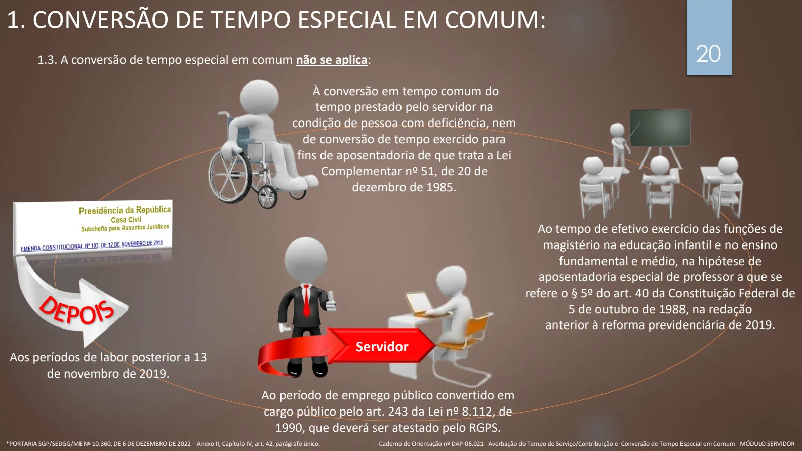
Conversão de tempo especial em comum
PDF · p. 21Caderno de Orientação nº DAP-06.021 - Averbação do Tempo de Serviço/Contribuição e Conversão de Tempo Especial em Comum - MÓDULO SERVIDOR
Ver página original — tabelas, imagens e diagramas
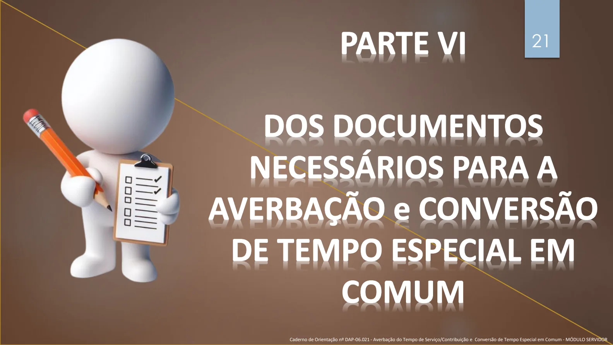
Documentos necessários
PDF · p. 221. DOCUMENTOS NECESSÁRIOS:
PARA AVERBAÇÃO DE TEMPO COMUM
DOCUMENTO RESPONSÁVEL PELO
FORNECIMENTO OBSERVAÇÕES
a) Certidão de Tempo de Contribuição (CTC), emitida pelo
INSS; ou
b) Declaração de tempo de contribuição (Anexo C deste
caderno); ou
c) Certidão de Tempo de Serviço Militar - CTSM, fornecido
pelo órgão responsável pela gestão do Sistema de
Proteção Social dos Militares – SPSM
Servidor Servidor deve solicitar ao responsável pela emissão do
documento para fins de instrução processual na sua OM
Requerimento Servidor No SPED – conforme descrição do item 2 desta parte deste CO
Informação OM No SPED – conforme descrição do item 2 desta parte deste CO
Caderno de Orientação nº DAP-06.021 - Averbação do Tempo de Serviço/Contribuição e Conversão de Tempo Especial em Comum - MÓDULO SERVIDOR
Ver página original — tabelas, imagens e diagramas
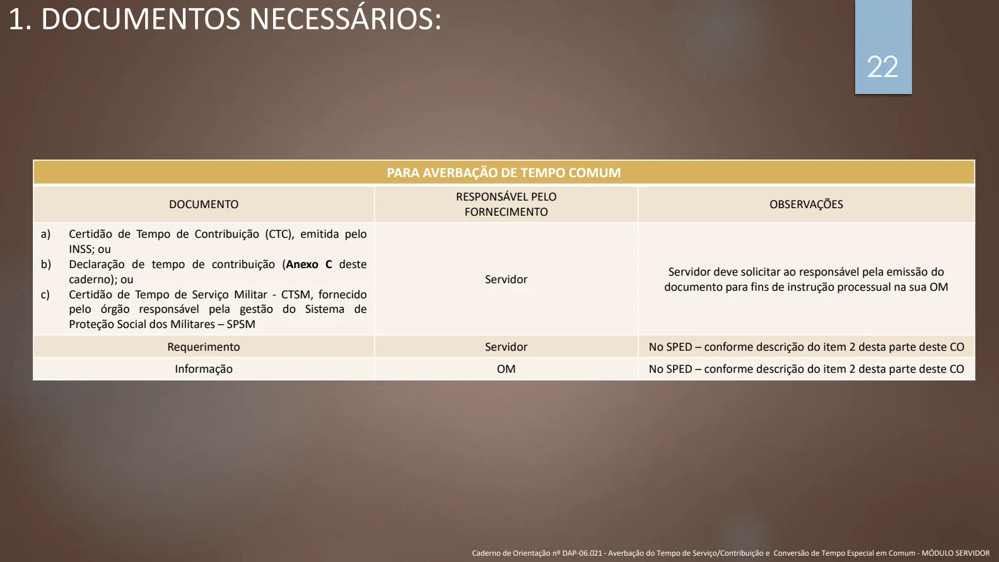
Documentos necessários
PDF · p. 231. DOCUMENTOS NECESSÁRIOS (cont.):
PARA CONVERSÃO DE TEMPO ESPECIAL EM COMUM
DOCUMENTO RESPONSÁVEL PELO
FORNECIMENTO OBSERVAÇÕES
a) formulário de informações sobre atividades exercidas em
condições especiais;
b) Laudo Técnico de Condições Ambientais do Trabalho - LTCAT
- observado o disposto no art. 6º do Anexo III da Portaria
SGP/SEDGG/ME nº 10.360, de 6 de dezembro de 2022 ou
os documentos aceitos em substituição àquele, consoante o
que dispõe o art. 7º do Anexo III da Portaria
SGP/SEDGG/ME nº 10.360, de 6 de dezembro de 2022;
c) parecer da perícia médica, em relação ao enquadramento
por exposição a agentes nocivos, na forma do art. 8º do
Anexo III da Portaria SGP/SEDGG/ME nº 10.360, de 6 de
dezembro de 2022; e
d) portaria de nomeação do servidor para investidura em
cargo público efetivo, cujas atividades sejam análogas às
dos profissionais das categorias presumidamente sujeitas a
condições especiais estabelecidas no do Anexo III da
Portaria SGP/SEDGG/ME nº 10.360, de 6 de dezembro de
2022 ou portaria de designação do servidor para operar
com raios X e substâncias radioativas, na forma do Decreto
nº 81.384, de 22 de fevereiro de 1978, quando for o caso.
Servidor após a emissão pelo
profissional competente
a) o formulário de informações ou Perfil Profissiográfico Previdenciário –
PPP (ANEXO A): (será emitido pelo órgão ou entidade responsável pelos
assentamentos funcionais do servidor público no correspondente período
de exercício das atribuições do cargo ou emprego público em condições
especiais;
b) o LTCAT será elaborado por servidor público da esfera federal, estadual,
distrital ou municipal, ou militar, ocupante de cargo público ou posto
militar de médico com especialização em medicina do trabalho, ou de
engenheiro ou de arquiteto com especialização em segurança do trabalho;
c) a perícia médica, em relação ao enquadramento por exposição a agentes
nocivos conterá informações sobre a existência de tecnologia de proteção
coletiva ou individual e sobre a sua eficácia e será elaborado com
observância às normas editadas pelo Ministério do Trabalho e Previdência -
MTP e aos procedimentos adotados pelo INSS e será de responsabilidade
de Perito Médico que integre, de preferência, o quadro funcional da
Administração Pública Federal;
Requerimento Servidor No SPED – conforme descrição da próxima página
Informação OM No SPED – conforme descrição da próxima página
Caderno de Orientação nº DAP-06.021 - Averbação do Tempo de Serviço/Contribuição e Conversão de Tempo Especial em Comum - MÓDULO SERVIDOR
Ver página original — tabelas, imagens e diagramas
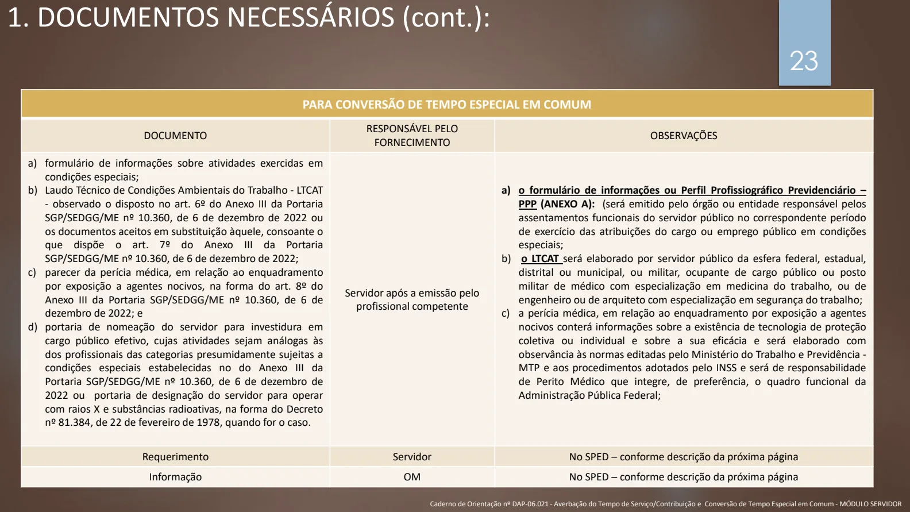
Documentos no SPED
PDF · p. 242. REDIGINDO OS DOCUMENTOS NO SPED (Requerimento e Informação)
1
2
4
5
Requerimento Informação
3
6
Caderno de Orientação nº DAP-06.021 - Averbação do Tempo de Serviço/Contribuição e Conversão de Tempo Especial em Comum - MÓDULO SERVIDOR
Ver página original — tabelas, imagens e diagramas
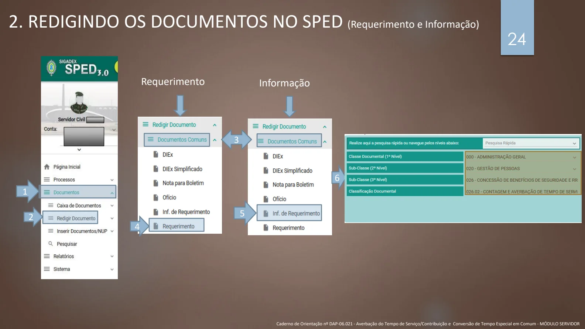
Documentos no SPED
PDF · p. 25Caderno de Orientação nº DAP-06.021 - Averbação do Tempo de Serviço/Contribuição e Conversão de Tempo Especial em Comum - MÓDULO SERVIDOR
Ver página original — tabelas, imagens e diagramas
7. TRAMITAÇÃO:
SERVIDOR
INTERESSADO
• Solicitar, no órgão ou
entidade responsável, a
CTC ou CTSM ou
declaração de tempo
de serviço.
• Fazer o requerimento
junto à OM de
vinculação.
OM
• Receber o
requerimento
• Elaborar a
informação
• Instruir o processo
com a verificação da
inclusão de todos os
documentos listados
nas páginas 22 ou 23
e em conformidade
com os preceitos da
Lei nº 9.784/99.
• Encaminhar o
processo à RM
enquadrante.
RM
• Conferir o processo.
• Encaminhar o
processo para a DAP .
DAP
• Analisar o processo e
realizar a averbação
ou conversão,
quando for o caso.
• Registrar o período
apurado nos sistemas
estruturantes.
• Publicar no Adt Téc
ao Bol DGP .
OM
•Informar ao
servidor sobre a
efetivação do
pedido;
•Extrair a portaria de
averbação/conversão
do Adt Téc ao Bol DGP ,
incluí-la no processo.
•Arquivar o processo
no módulo do
Assentamento
Funcional Digital
(AFD).
Caderno de Orientação nº DAP-06.021 - Averbação do Tempo de Serviço/Contribuição e Conversão de Tempo Especial em Comum - MÓDULO SERVIDOR
Ver página original — tabelas, imagens e diagramas
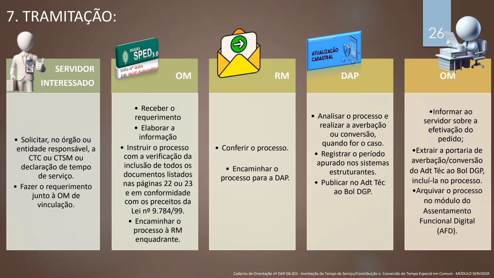
Fontes e elaboração
PDF · p. 27ELABORAÇÃO:
ASSESSORIA TÉCNICA DA SPC/DAP
SUBSEÇÃO DE CADASTRO DA SPC/DAP
JUNHO DE 2024
Para conhecer melhor o assunto, leia as
legislações indicadas no início deste caderno, disponíveis no link:
https://legis.sigepe.gov.br/legis/pesquisa-avancada
Ver página original — tabelas, imagens e diagramas
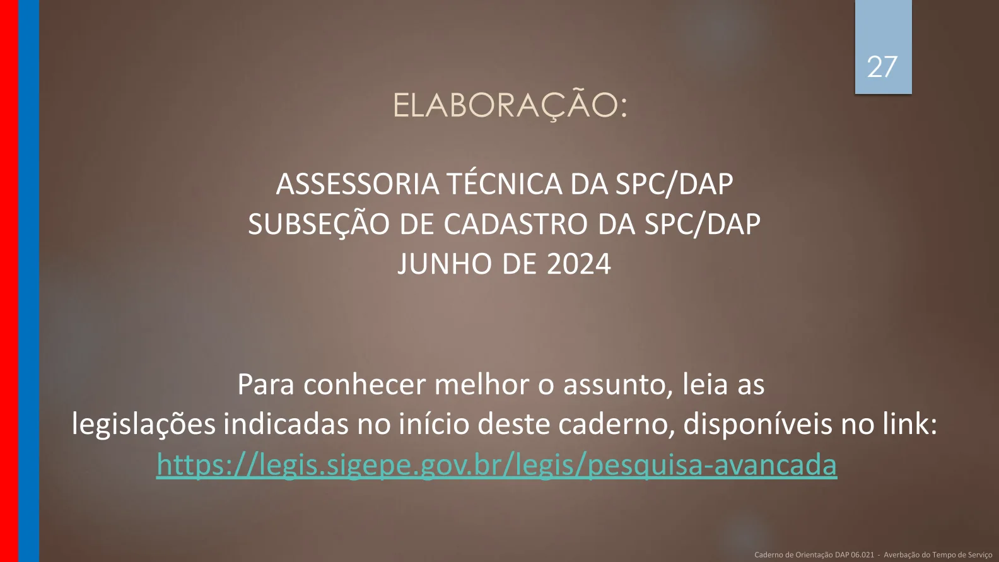
ANEXOS
ANEXO A
Perfil Profissiográfico Previdenciário - PPP
MINISTÉRIO DA DEFESA EXÉRCITO BRASILEIRO
(escalões hierárquicos até a OM expedidora)
(Denominação histórica)
PERFIL PROFISSIOGRÁFICO PREVIDENCIÁRIO - PPP
DADOS ADMINISTRATIVOS
1 - CNPJ do Domicílio Tributário/CEI/CAEPF/CNO
2 - Nome Empresarial
3 - CNAE
4 - Nome do Trabalhador
5 - BR/PDH 6 - CPF
7 - Data de Nascimento 8 - Sexo (F/M) 9 - Matrícula do Trabalhador no eSocial 10 - Data de Admissão 11 - Regime Revezamento
Ver página original — tabelas, imagens e diagramas
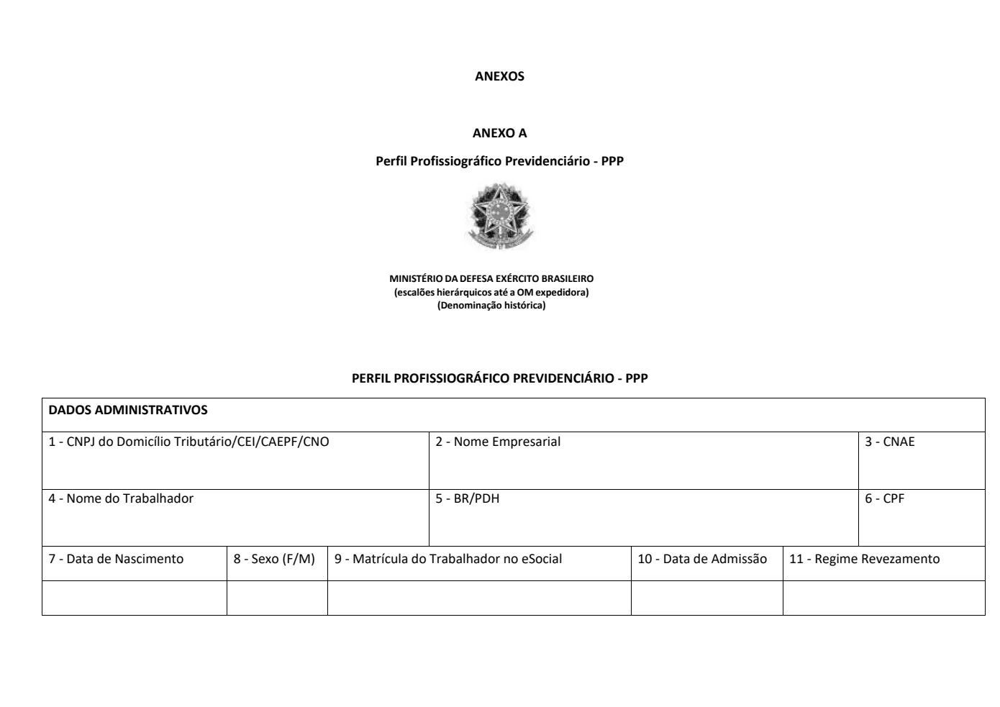
12 - CAT REGISTRADA
12.1 - Data do Registro 12.2 - Número da CAT
13 - LOTAÇÃO E ATRIBUIÇÃO
13.1 - Período 13.2 - CNPJ/CEI/
CAEPF/CNO 13.3 - Setor 13.4 - Cargo 13.5 - Função 13.6 - CBO 13.7 - Código
GFIP/eSocial
____/____/________ a
____/____/________
____/____/________ a
____/____/________
____/____/________ a
____/____/________
Ver página original — tabelas, imagens e diagramas
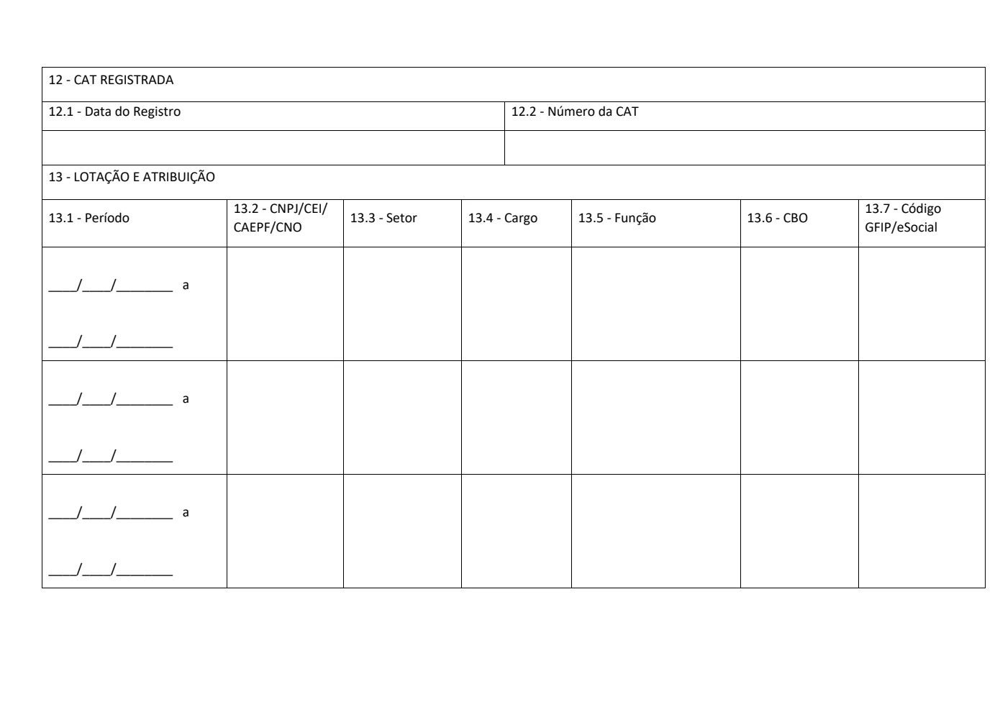
14 - PROFISSIOGRAFIA
14.1 - Período 14.2 - Descrição das Atividades
____/____/________ a ____/____/________
____/____/________ a ____/____/________
____/____/________ a ____/____/________
____/____/________ a ____/____/________
REGISTROS AMBIENTAIS
15 - EXPOSIÇÃO A FATORES DE RISCOS
15.1 - Período 15.2 - Tipo
15.3 -
Fator de
Risco
15.4 -
Intensidade/
Concentração
15.5 -
Técnica
Utilizada
15.6 -
EPC
Eficaz
(S/N)
15.7 -
EPI
Eficaz
(S/N)
15.8 -
CA EPI
15.9 - Atendimento aos requisitos das NR -06 e
NR-01 do MTP pelos EPIs informados (*)
Medida de
Proteção
Condição de
Funcionamento
do EPI
Prazo de
Validade
do EPI
Periodicidade
da Troca do
EPI
Higienização
do EPI
____/____/________
a
____/____/________
____/____/________
Ver página original — tabelas, imagens e diagramas
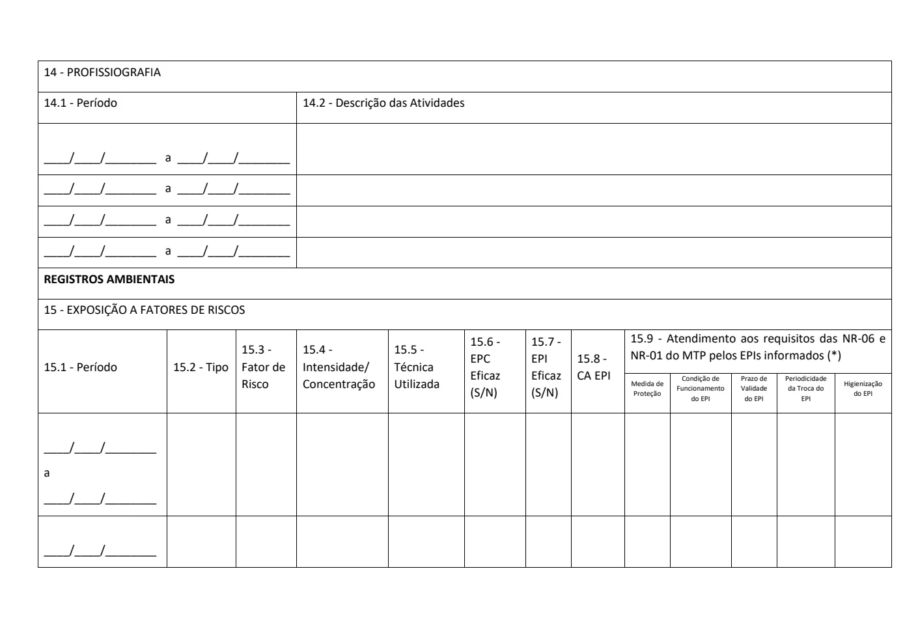
a
____/____/________
____/____/________
a
____/____/________
____/____/________
a
____/____/________
* Legenda do item 15.9:
Medida de Proteção: Foi tentada a implementação de medidas de proteção coletiva, de caráter administrativo ou de organização do trabalho, optando-se pelo
Equipamento de Proteção Individual - EPI porinviabilidade técnica, insuficiência ou interinidade, ou ainda em caráter complementar ou emergencial?
Condição de Funcionamento do EPI: Foram observadas as condições de funcionamento e do uso ininterrupto do EPI ao longo do tempo, conforme especificação
técnica do fabricante, ajustada às condições?
Prazo de Validade do EPI: Foi observado o prazo de validade, conforme Certificado de Aprovação - CA do MTP?
Periocidade da Troca do EPI: Foi observada a periodicidade de troca definida pelos programas ambientais, comprovada mediante recibo assinad o pelo usuário
em época própria?
Higienização do EPI: Foi observada a higienização?
Ver página original — tabelas, imagens e diagramas
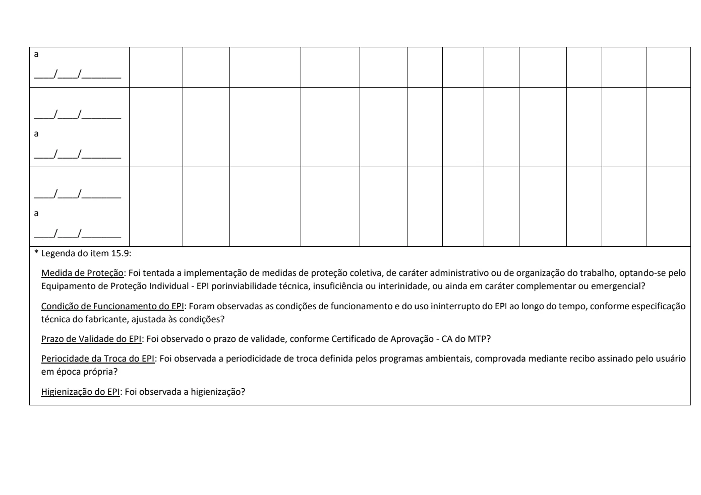
16. RESPONSÁVEL PELOS REGISTROS AMBIENTAIS
16.1 - Período 16.2 - CPF 16.3 Registro Conselho de Classe 16.4 Nome do profissional legalmente
habilitado
____/____/________ a ____/____/________
____/____/________ a ____/____/________
____/____/________ a ____/____/________
____/____/________ a ____/____/________
RESPONSÁVEIS PELAS INFORMAÇÕES
Declaramos, para todos fins de direito, que as informações prestadas neste documento são verídicas e foram transcritas fielmente dos registros administrativos,
das demonstrações ambientais e dos programas médicos de responsabilidade da empresa. É de nosso conhecimento que a prestação de informações falsas neste
documento constitui crime de falsificação de documento público, nos termos do art. 297 do Código Penal e, também, que tais informações são de caráter privativo
do trabalhador, constituindo crime, nos termos da Lei nº 9.029, de 13 de abril de 1995, práti cas discriminatórias decorrentes de sua exigibilidade por outrem,
bem como de sua divulgação para terceiros, ressalvado quando exigida pelos órgãos públicos competentes.
17 - Data da Emissão do PPP 18 - Representante Legal da Empresa
______/______/_________
18.1 - Nº CPF do Representante Legal 18.2 - Nome do Representante Legal
_____________________________________________________
(Assinatura física ou eletrônica)
Ver página original — tabelas, imagens e diagramas
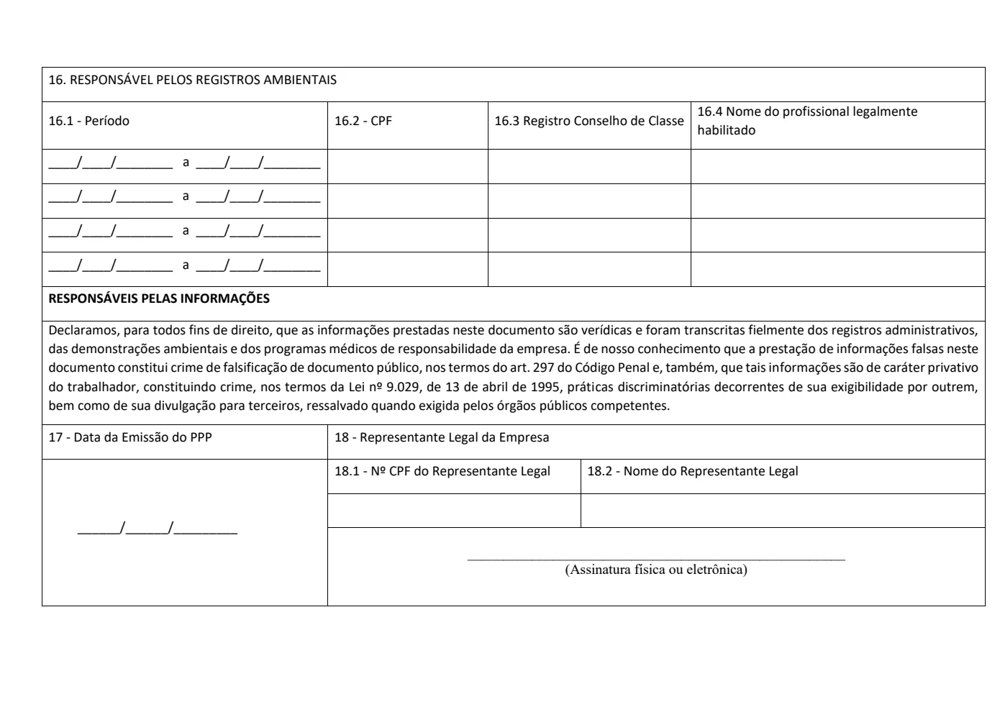
Esta página contém conteúdo gráfico. Consulte a reprodução original abaixo.
Ver página original — tabelas, imagens e diagramas
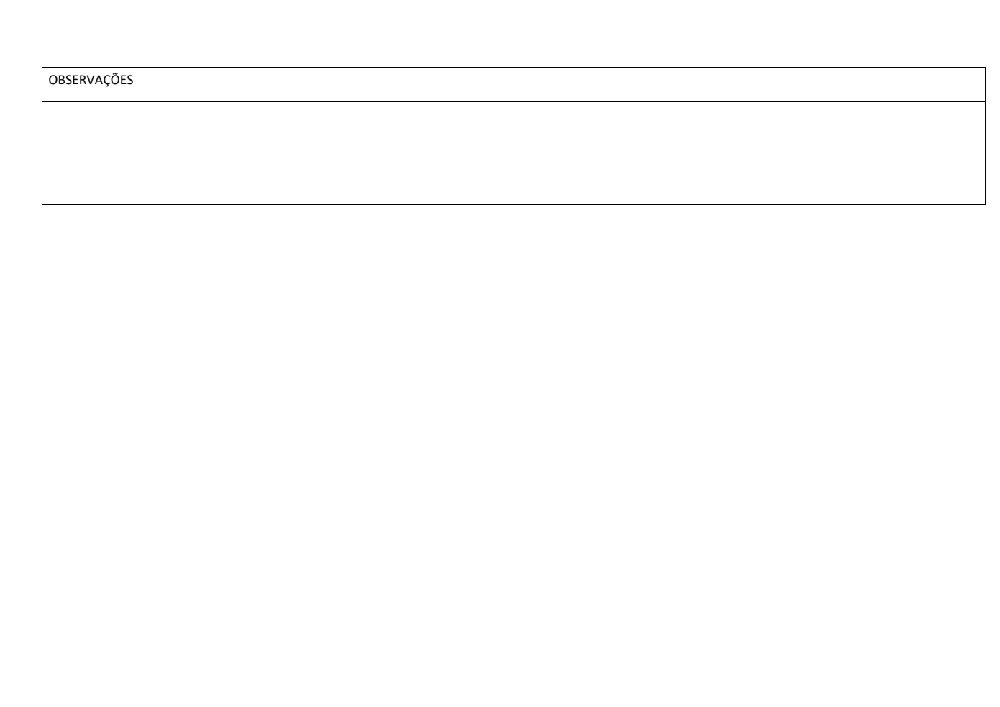
Preenchimento do PPP
PDF · p. 34INSTRUÇÕES DE PREENCHIMENTO DO PPP
CAMPO DESCRIÇÃO INSTRUÇÃO DE PREENCHIMENTO
DADOS ADMINISTRATIVOS
1 CNPJ do Domicílio Tributário/
CEI/ CAEPF/CNO
CNPJ relativo ao estabelecimento escolhido como domicílio tributário, nos termos do art. 127 do CTN,
no formato XXXXXXXX/XXXX-XX; ou
Matrícula no Cadastro Espec ífico do INSS (Matrícula CEI) relativa à obra realizada por Contribuinte
Individual ou ao estabelecimento escolhido como domicílio tributário que não possua CNPJ, no formato
XX.XXX.XXXXX/XX, ambos compostos por caracteres numéricos; ou
Cadastro das Atividades Econômicas das Pessoas Físicas (CAEPF) ou Cadastro Nacional de Obras (CNO)
do empregador no formato, respectivamente, XXX.XXX.XXX/XXX-XX e XX.XXX.XXXXX/XX.
Quando da implantação do PPP em meio eletrônico, o campo apresentará o CNPJ raiz no formato
XX.XXX.XXX ou o CPF do empregador com o qual o vínculo está estabelecido.
2 NOME EMPRESARIAL Até quarenta caracteres alfanuméricos.
3 CNAE
Classificação Nacional de Atividades Econômicas da Empresa - CNAE, completo, com sete caracteres
numéricos, no formato XXXXXX-X, instituído pelo IBGE por meio da Resolução CONCLA nº 07, de 16 de
dezembro de 2002. A tabela de códigos CNAE - Fiscal pode ser consultada na internet, no site
www.cnae.ibge.gov.br
4 NOME DO TRABALHADOR Até quarenta caracteres alfabéticos.
Ver página original — tabelas, imagens e diagramas
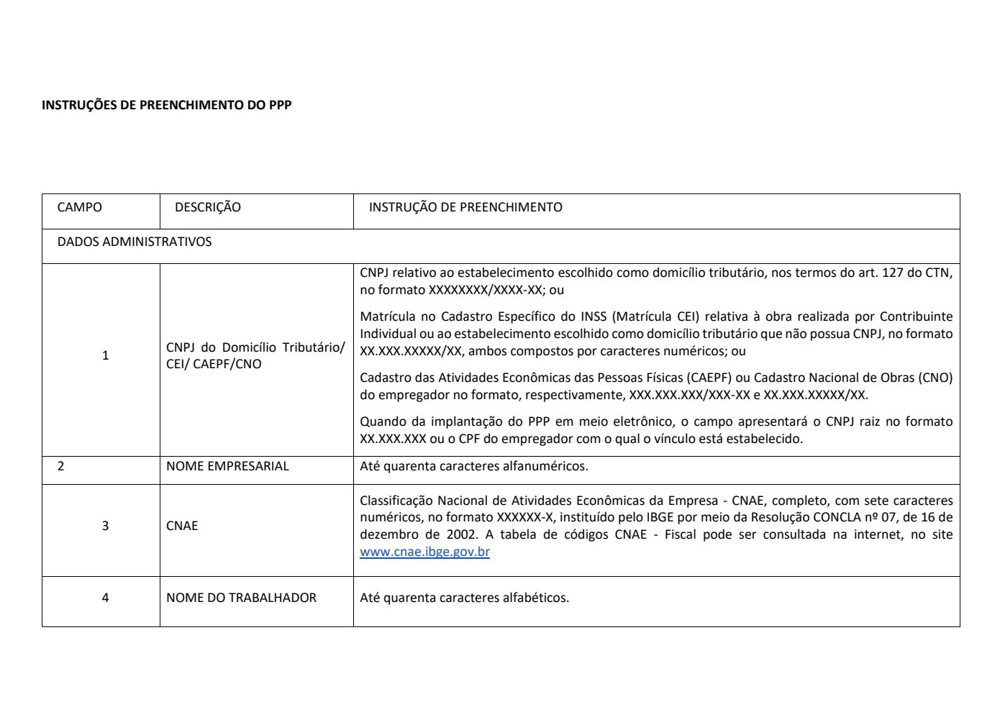
Preenchimento do PPP
PDF · p. 355 BR/PDH
BR - Beneficiário Reabilitado; PDH - Portador de Deficiência Habilitado; NA - Não Aplicável.
Preencher com base no art. 93 da Lei nº 8.213, de 1991, que estabelece a obrigatoriedade do
preenchimento dos cargos de empresas com cem ou mais empregados com beneficiários reabilitados
ou pessoas portadoras de deficiência, habilitadas, na seguinte proporção:
I - até 200 empregados 2%;
II - de 201 a 500 3%;
III - de 501 a 1.000 4%;
IV - de 1.001 em diante 5%.
6 CPF Número de Cadastro da Pessoa Física com onze caracteres numéricos, no formato XXX.XXX.XXX-XX.
7 DATA DO NASCIMENTO No formato DD/MM/AAAA
8 SEXO (F/M) F - Feminino; M - Masculino
9 MATRÍCULA DO
TRABALHADOR NO eSOCIAL Número único composto pelo código da empresa e pelo número do empregado.
10 DATA DE ADMISSÃO No formato DD/MM/AAAA
11 REGIME DE REVEZAMENTO
Regime de Revezamento de Trabalho, para trabalhos em turnos ou escala, especificando tempo
trabalhado e tempo de descanso, com até quinze caracteres alfanuméricos.
Exemplo: 24 x 72 horas; 14 x 21 dias; 2 x 1 meses. Se inexistente, preencher com NA - Não Aplicável.
Ver página original — tabelas, imagens e diagramas
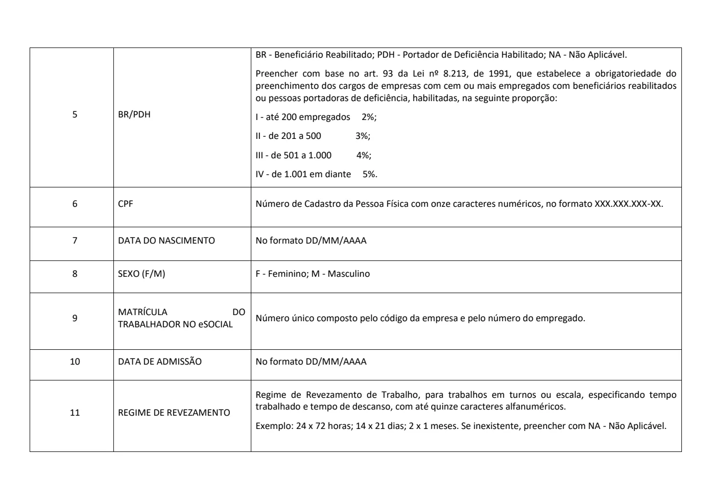
Preenchimento do PPP
PDF · p. 3612 CAT REGISTRADA
Informações sobre as Comunicações de Acidente do Trabalho registradas pela empresa na Previdência
Social, nos termos do art. 22 da Lei nº 8.213, de 1991, do art. 169 da CLT, do art. 336 do RPS, aprovado
pelo Decreto nº 3.048, de 1999, do item 7.4.8, alínea "a", da NR -07 do MTP e dos itens 4.3 e 6.1 do
Anexo 13-A da NR-15 do MTP, disciplinado pela Portaria MPAS nº 5.051, de 1999, que aprova o Manual
de Instruções para Preenchimento da CAT.
12.1 DATA DO REGISTRO No formato DD/MM/AAAA.
12.2 NÚMERO DA CAT
Com treze caracteres numéricos, com formato XXXXXXXXXX-X/XX.
Os dois últimos caracteres corr espondem a um número sequencial relativo ao mesmo acidente,
identificado por NIT, CNPJ e data do acidente.
13 LOTAÇÃO E ATRIBUIÇÃO
Informações sobre o histórico de lotação e atribuições do trabalhador, por período.
A alteração de qualquer um dos campos - 13.2 a 13.7 - implica, obrigatoriamente, a criação de nova
linha, com discriminação do período, repetindo as informações que não foram alteradas.
13.1 PERÍODO
Data de início e data de fim do período, ambas no formato DD/MM/AAAA.
No caso de trabalhador ativo, a data de fim do último período não deverá ser preenchida.
13.2 CNPJ/CEI/CAEPF/CNO
Local onde efetivamente o trabalhador exerce suas atividades. Deverá ser informado o CNPJ do
estabelecimento de lotação do trabalhador ou da empresa tomadora de serviço s, no formato
XXXXXXXX/XXXX-XX ou Matrícula CEI da obra ou do estabelecimento que não possua CNPJ, no formato
XX.XXX.XXXXX/XX, ou o Cadastro das Atividades Econômicas das Pessoas Físicas (CAEPF), no formato
XXX.XXX.XXX/XXX-XX ou o Cadastro Nacional de Obra s (CNO) do empregador no formato
XX.XXX.XXXXX/XX.
13.3 SETOR Lugar administrativo na estrutura organizacional da empresa, onde o trabalhador exerce suas
atividades laborais, com até quinze caracteres alfanuméricos.
Ver página original — tabelas, imagens e diagramas
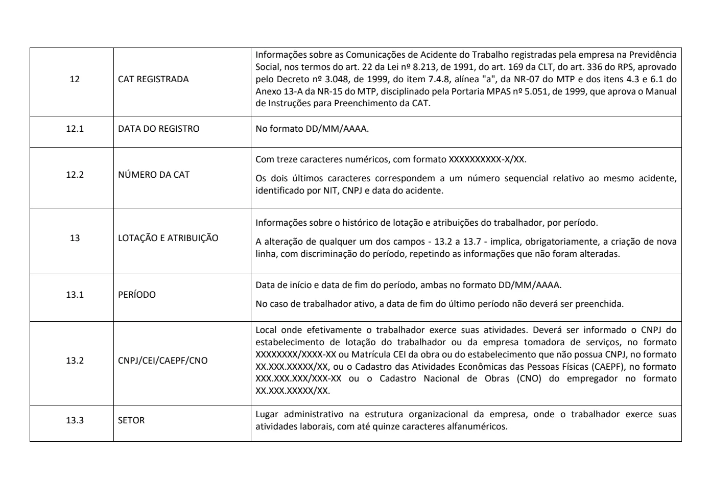
Preenchimento do PPP
PDF · p. 3713.4 CARGO Cargo do trabalhador, constante na CTPS, se empregado ou trabalhador avulso, ou constante no Recibo
de Produção e Livro de Matrícula, se cooperado, com até trinta caracteres alfanuméricos.
13.5 FUNÇÃO
Lugar administrativo na estrutura organizacional da empresa, onde o trabalhador te nha atribuição de
comando, chefia, coordenação, supervisão ou gerência. Quando inexistente a função, preencher com
NA - Não Aplicável, com até trinta caracteres alfanuméricos.
13.6 CBO
Classificação Brasileira de Ocupação - CBO vigente à época, com seis caracteres numéricos:
1 - No caso de utilização da tabela CBO relativa a 1994, utilizar a CBO completa com cinco caracteres.
2 - No caso de utilização da tabela CBO relativa a 2002, utilizar a família do CBO com quatro caracteres,
completando com “0” (zero) a primeira posição.
A tabela de CBO pode ser consultada na internet, no site
http://cbo.maisemprego.mte.gov.br/cbosite/pages/home.jsf
OBS.: Após a alteração da GFIP, somente será ace ita a CBO completa, com seis caracteres numéricos,
conforme a nova tabela CBO relativa a 2002.
13.7 CÓDIGO DE OCORRÊNCIA DA
GFIP/eSOCIAL
Código Ocorrência da GFIP para o trabalhador, com dois caracteres numéricos, conforme Manual da
GFIP para usuários do SEFIP.
14 PROFISSIOGRAFIA
Informações sobre a profissiografia do trabalhador, por período.
A alteração do campo 14.2 implica, obrigatoriamente, a criação de nova linha, com discriminação do
período.
Ver página original — tabelas, imagens e diagramas
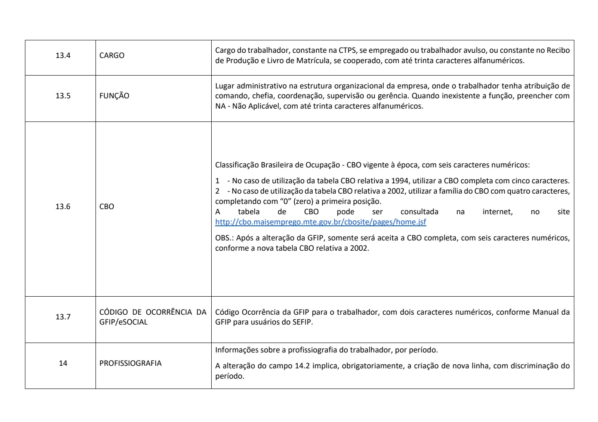
Preenchimento do PPP
PDF · p. 3814.1 PERÍODO Data de início e data de fim do período, a mbas no formato DD/MM/AAAA. No caso de trabalhador
ativo, a data de fim do último período não deverá ser preenchida.
14.2 DESCRIÇÃO DAS ATIVIDADES
Descrição das atividades, físi cas ou mentais, realizadas pelo trabalhador, por força do poder de
comando a que se submete, com até quatrocentos caracteres alfanuméricos.
As atividades deverão ser descritas c om exatidão e de forma sucinta, com a utilização de verbos no
infinitivo impessoal.
REGISTROS AMBIENTAIS
15 EXPOSIÇÃO A FATORES DE
RISCOS
Informações sobre a exposição do trabalhador a fatores de riscos ambientais, por período, ainda que
estejam neutralizados, atenuados ou exista proteção eficaz.
Facultativamente, também poderão ser indicados os fatores de riscos ergonômicos e mecânicos. A
alteração de qualquer um dos campos - 15.2 a 15.8 - implica, obrigatoriamente, a criação de nova linha,
com discriminação do período, repetindo as informações que não foram alteradas.
OBS.: Após a implantação da mi gração dos dados do PPP em meio magnético pela Previdência Social,
as informações relativas aos fatores de riscos ergonômicos e mecânicos passarão a ser obrigatórias.
15.1 PERÍODO Data de início e data de fim do período, ambas no formato DD/MM/AAAA. No caso de trabalhador
ativo, a data de fim do último período não deverá ser preenchida.
15.2 TIPO
F - Físico; Q - Químico; B - Biológico; E-Ergonômico/Psicossocial, M - Mecânico/de Acidente, conforme
classificação adotada pelo Ministério da Saúde, em "Doenças Relacionadas ao Trabalho: Manual de
Procedimentos para os Serviços de Saúde", de 2001.
A indicação do Tipo "E" e "M" é facultativa.
O que determina a associação de agentes é a superposição de períodos com fatores de risco diferentes.
Ver página original — tabelas, imagens e diagramas
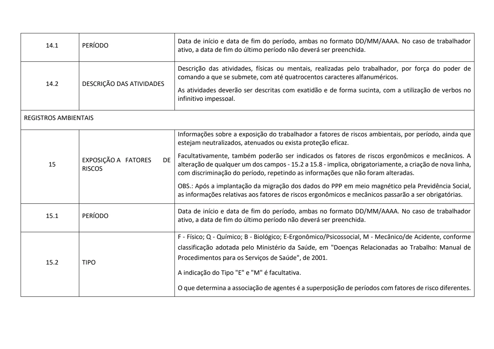
Preenchimento do PPP
PDF · p. 3915.3 FATOR DE RISCO
Descrição do fator de risco, com até quarenta caracteres alfanuméricos.
Em se tratando do Tipo “Q”, deverá ser informado o nome da substância ativa, não sendo aceitas
citações de nomes comerciais.
15.4 INTENSIDADE /
CONCENTRAÇÃO
Intensidade ou Concentração, depend endo do tipo de agente, com até quinze caracteres
alfanuméricos.
Caso o fator de risco não seja passível de mensuração, preencher com NA - Não Aplicável.
15.5 TÉCNICA UTILIZADA
Técnica utilizada para apuração do item 15.4, com até quarenta caracteres alfanuméricos.
Caso o fator de risco não seja passível de mensuração, preencher com NA - Não Aplicável.
15.6 EPC EFICAZ (S/N)
S - Sim; N - Não, considerando se houve ou não a eliminação ou a neutralização, com base no informado
nos itens 15.2 a 15.5, asseguradas as condições de funcionamento do EPC ao longo do tempo, conforme
especificação técnica do fabricante e respectivo plano de manutenção.
15.7 EPI EFICAZ (S/N)
S - Sim; N - Não, considerando se houve ou não a atenuação, com base no informado nos itens 15.2 a
15.5, observado o disposto na NR-06 do MTP, assegurada a observância:
1- da hierarquia estabelecida no item 1.5.5.1.2 da NR -01 do MTP (medidas de proteção coletiva,
medidas de caráter administrativo ou de organização do trabalho e utilização de EPI, nesta ordem,
admitindo-se a utilização de EPI somente em situações de inviabilidade técnica, insuficiência ou
interinidade à implementação do EPC, ou ainda em caráter complementar ou emergencial);
2- das condições de funcionamento do EPI ao longo do tempo, conforme especificação técnica do
fabricante, ajustada às condições de campo;
3- do prazo de validade, conforme Certificado de Aprovação do MTP;
4- da periodicidade de troca definida pelos programas ambientais, devendo esta ser comprovada
mediante recibo; e dos meios de higienização.
15.8 C.A. EPI
Número do Certificado de Aprovação do MTP para o Equipamento de Proteção Individual referido no
campo 15.7, com cinco caracteres numéricos.
Caso não seja utilizado EPI, preencher com NA - Não Aplicável.
Ver página original — tabelas, imagens e diagramas
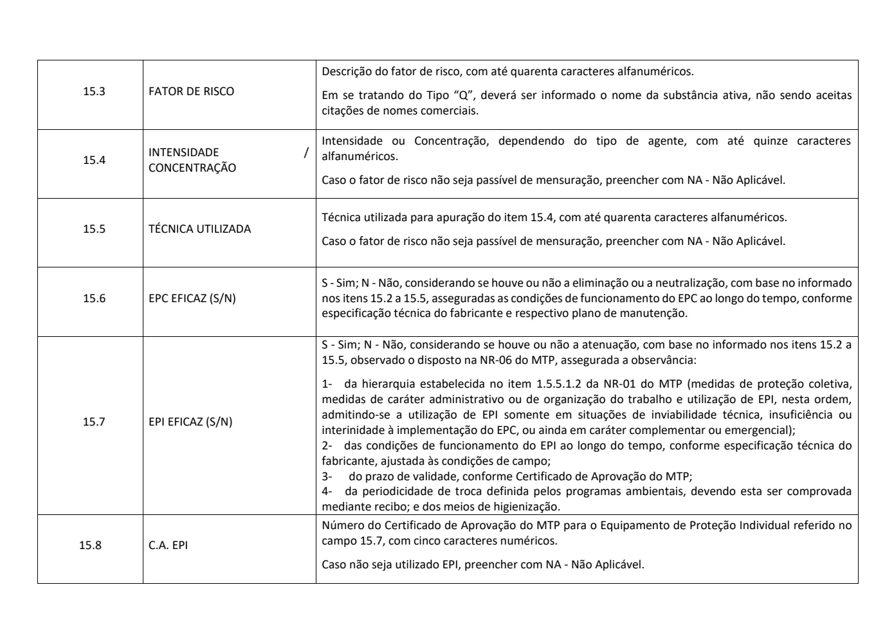
Preenchimento do PPP
PDF · p. 4015.9
ATENDIMENTO AOS
REQUISITOS DAS NR -06 E NR -
01 DO MTP PELOS EPI
INFORMADOS
Observação do disposto na NR-06 do MTP, assegurada a observância:
1- da hierarquia estabelecida no item 1.5.5.1.2 da NR -01 do MTP (medidas de proteção coletiva,
medidas de caráter administrativo ou de organização do trabalho e utilização de EPI, nesta ordem,
admitindo-se a utilização de EPI somente em situações de inviabilidade técnica, insuficiência ou
interinidade à implementação do EPC, ou ainda em caráter complementar ou emergencial);
2- das condições de funcionamento do EPI ao longo do tempo, conform e especificação técnica do
fabricante, ajustada às condições de campo;
3- do prazo de validade, conforme Certificado de Aprovação do MTP;
4- da periodicidade de troca definida pelos programas ambientais, devendo esta ser comprovada
mediante recibo; e dos meios de higienização.
16 RESPONSÁVEL PELOS
REGISTROS AMBIENTAIS Informações sobre os responsáveis pelos registros ambientais, por período.
16.1 PERÍODO Data de início e data de fim do período, ambas no formato DD/MM/AAAA. No caso de trabalhador
ativo, sem alteração do responsável, a data de fim do último período não deverá ser preenchida.
16.2 CPF Número de Cadastro da Pessoa Física com onze caracteres numéricos, no formato XXX.XXX.XXX-XX.
16.3 REGISTRO CONSELHO DE
CLASSE
Número do registro profissional no Conselho de Classe, com nove caracteres alfanuméricos, no formato
XXXXXX-X/XX ou XXXXXXX/XX.
A parte “-X” corresponde à D - Definitivo ou P - Provisório.
A parte “/XX” deve ser preenchida com a UF, com dois caracteres alfabéticos.
A parte numérica deverá ser completada com zeros à esquerda.
16.4 NOME DO PROFISSIONAL
LEGALMENTE HABILITADO Até quarenta caracteres alfabéticos.
Ver página original — tabelas, imagens e diagramas
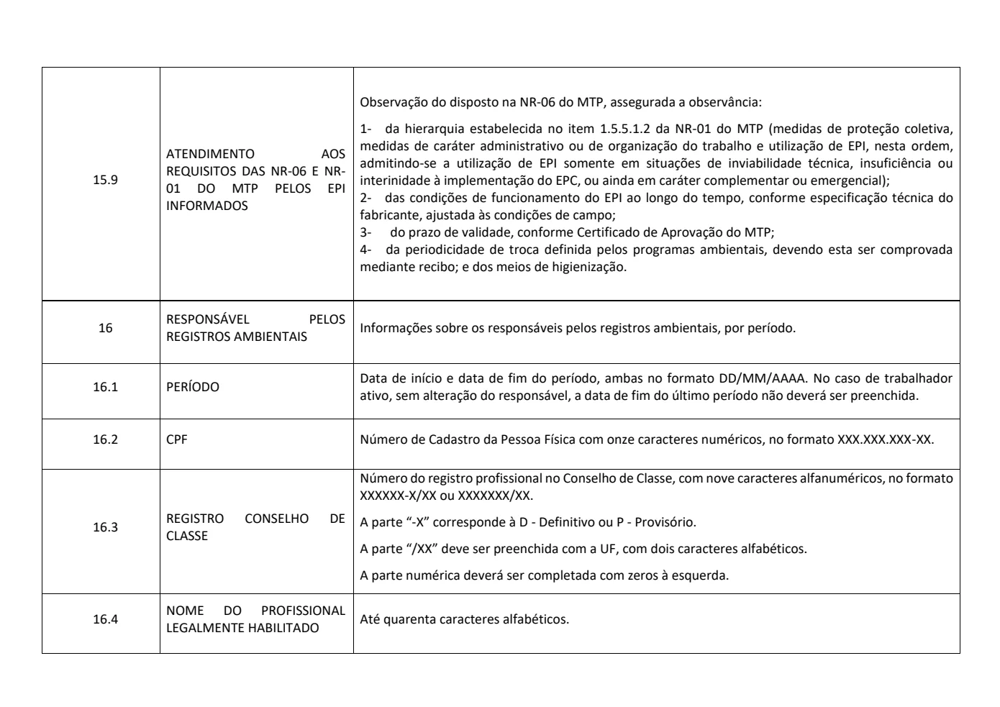
Preenchimento do PPP
PDF · p. 41RESPONSÁVEIS PELAS INFORMAÇÕES
17 DATA DE EMISSÃO DO PPP Data em que o PPP é impresso e assinado pelos responsáveis, no formato DD/MM/AAAA.
18 REPRESENTANTE LEGAL DA
EMPRESA Informações sobre o Representante Legal da empresa.
18.1 NIT DO REPRESENTANTE
LEGAL
NIT do representante legal da empresa com onze caracteres numéricos, no formato XXX.XXXXX.XX-X.
O NIT corresponde ao número do PIS/PASEP/CI, sendo que, no caso de CI, pode ser utilizado o número
de inscrição no SUS ou na Previdência Social.
18.2 NOME DO REPRESENTANTE
LEGAL Até quarenta caracteres alfabéticos.
18.3
CARIMBO DA EMPRESA E
ASSINATURA DO
REPRESENTANTE LEGAL
Carimbo da empresa e assinatura, física ou eletrônica, do Representante Legal.
OBSERVAÇÕES
Devem ser incluídas neste campo informações necessárias à análise do PPP, bem como facilitadoras do requerimento do benefício , como por exemplo:
esclarecimento sobre alteração de razão social da empresa, no caso de sucessora ou indicador de empresa pertencente a grupo econômico.
OBS.: É facultada a inclusão de informações complementares ou adicionais ao PPP.
Ver página original — tabelas, imagens e diagramas
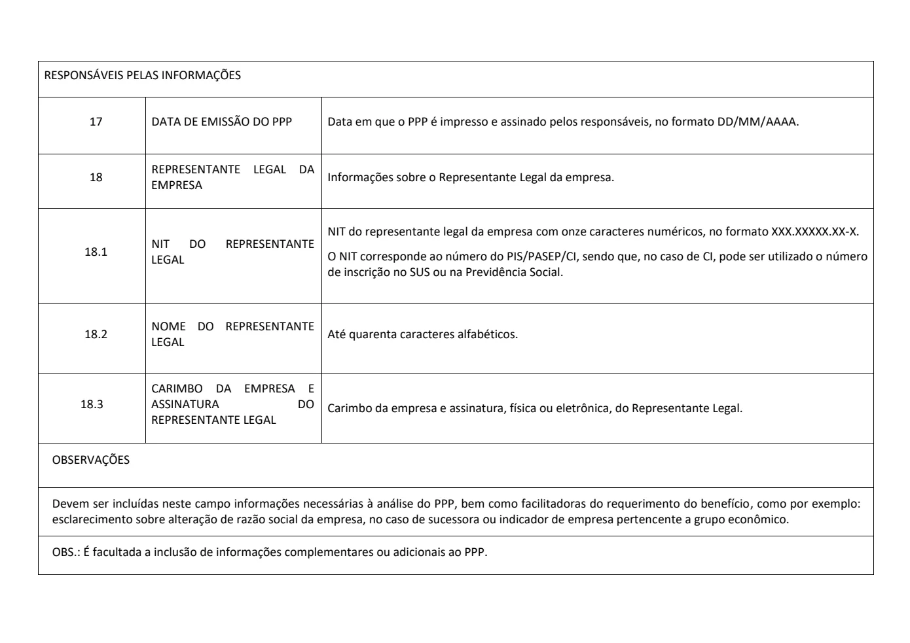
Perguntas frequentes
PDF · p. 42ANEXO B
Perguntas Frequentes e Orientações sobre a Conversão de Tempo Especial em Comum*
MINISTÉRIO DA DEFESA EXÉRCITO BRASILEIRO
(escalões hierárquicos até a OM expedidora)
(Denominação histórica)
1. O QUE É, EFETIVAMENTE, A CONVERSÃO DE TEMPO ESPECIAL EM COMUM?
Resposta: Trata-se da aplicação de um fator de conversão sobre um período específico de
tempo de contribuição realizado em condições especiais, convertendo -o em tempo comum p ara fins de
aposentadoria. O servidor, ao solicitar esta conversão, está sinalizando que deseja se aposentar pela regra
comum e não pela regra especial, uma vez que o tempo convertido perderá sua característica especial.
Feita a conversão, o tempo especial não poderá mais ser usado para cumprir os requisitos das regras de
Aposentadoria Voluntária Especial.
2. QUAL O MARCO TEMPORAL PARA A CONVERSÃO DO TEMPO ESPECIAL EM COMUM?
Resposta: 13 de novembro de 2019, da seguinte forma:
• Os servidores públicos federais que exerceram atividades em condições especiais prejudiciais à
saúde ou à integridade física, ATÉ o dia 13 de novembro de 2019, PODERÃO ter esse tempo
convertido em tempo comum para fins de aposentadoria e contagem recíproca de tempo de
contribuição.
• Salvo decisão judicial expressa em contrário, é VEDADA a conversão de tempo especial em
comum para períodos laborados com efetiva exposição a agentes químicos, físicos e biológicos
prejudiciais à saúde, ou associação desses agentes A PARTIR de 13 de novembro de 2019.
3. A CONVERSÃO É FEITA DE FORMA AUTOMÁTICA PARA QUEM TEM TEMPO
ESPECIAL ATÉ 13/11/2019?
Resposta: Em regra, não. Existem basicamente três hipóteses de conversão:
• de tempo exercido sob condições especiais no próprio órgão: por opção do servidor e
dependente de sua solicitação; mediante instrução de processo administrativo, ou seja, não é
automático.
• de tempo especial anterior oriundo de outro Regime : dependente de indicação expressa, na
Certidão de Tempo de Contribuição , do período exercido sob condiçõe s especiais, no órgão
anterior. Esta opção também é vinculada à solicitação do servidor, mediante instrução de processo
administrativo, ou seja, não é automático.
• de tempo especial anterior oriundo de outro Regime e JÁ CONVERTIDO na Certidão em face de
decisão judicial: nesse caso, no ato da Averbação será realizado o registro do tempo já convertido
pelo regime de origem, desde que incluída também a decisão judicial que lhe deu causa. Neste
caso, a averbação ainda depende de provocação por meio de procedimento próprio.
Ver página original — tabelas, imagens e diagramas
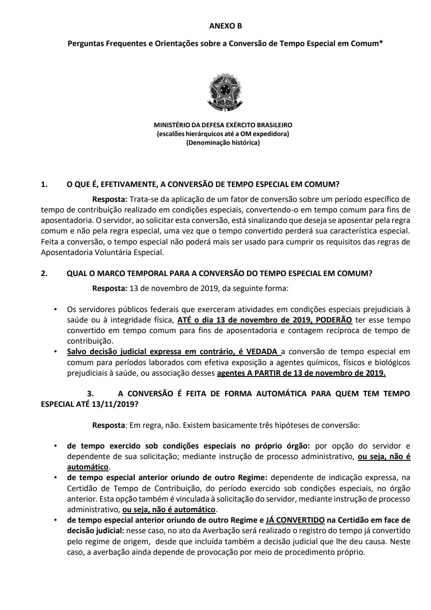
Perguntas frequentes
PDF · p. 434. QUAIS OS CASOS EM QUE NÃO HÁ APLICABILIDADE DA CONVERSÃO DE TEMPO ESPECIAL EM
COMUM?
Resposta: A conversão de tempo especial em comum não se aplica:
• aos períodos de labor posterior a 13 de novembro de 2019;
• à conversão em tempo comum do tempo prestado pelo servidor na condição de pessoa com
deficiência, nem de conversão de tempo exercido para fins de aposentadoria de que trata a Lei
Complementar nº 51, de 20 de dezembro de 1985;
• ao tempo de efetivo exercício das funções de magistério na educaç ão infantil e no ensino
fundamental e médio, na hipótese de aposentadoria especial de professor a que se refere o § 5º do art.
40 da Constituição Federal de 5 de outubro de 1988, na redação anterior à reforma previdenciária de
2019; e
• ao período de emprego público convertido em cargo público pelo art. 243 da Lei nº 8.112, de 1990,
que deverá ser atestado pelo RGPS.
5. QUAIS OS CRITÉRIOS PARA COMPROVAÇÃO DO EXERCÍCIO DAS ATRIBUIÇÕES DE CARGO
PÚBLICO EM CONDIÇÕES ESPECIAIS?
Resposta: O reconhecimento de tempo d e serviço público do Poder Executivo federal
prestado sob condições especiais, prejudiciais à saúde ou à integridade física, dependerá de exercício
permanente, não ocasional ou intermitente, das atribuições do cargo em condições especiais,
prejudiciais à saúde ou à integridade física.
A obrigatoriedade do exercício permanente se estende, inclusive, no período em que o
servidor estiver em exercício de mandato eletivo; cedido, com ou sem ônus para o cessionário, a órgão
ou entidade da administração direta ou indireta, do mesmo ou de outro ente federativo, ou afa stado do
país por licenciamento.
ATENÇÃO!
• Não será admitida prova exclusivamente testemunhal ou apenas a comprovação
da percepção de adicional de insalubridade ou periculosidade ou gratificação por
trabalhos com Raios -X ou substâncias radioativas para fins de comprovação do
tempo de serviço público prestado sob condições especiais.
• É vedada a caracterização de submissão a condições especiais, prejudiciais à
saúde ou à integridade física, de forma pre sumida, em face da nomenclatura e
atribuições dos cargos públicos se assemelharem aos existentes na iniciativa
privada.
6. QUAL É O FATOR DE CONVERSÃO?
Resposta: De acordo com a legislação vigente, os fatores de conversão são:
• 1,20 para a mulher; e
• 1,40 para o homem.
De modo prático, multiplica-se o tempo de contribuição pelo fator de conversão, como no
exemplo abaixo:
TEMPO DE
CONTRIBUIÇÃO
ESPECIAL
FATOR DE CONVERSÃO CÁLCULO TEMPO
CONVERTIDO
HOMEM 10 anos 1,4 10 x 1,4 14 anos
MULHER 10 anos 1,2 10 x 1,2 12 anos
Ver página original — tabelas, imagens e diagramas
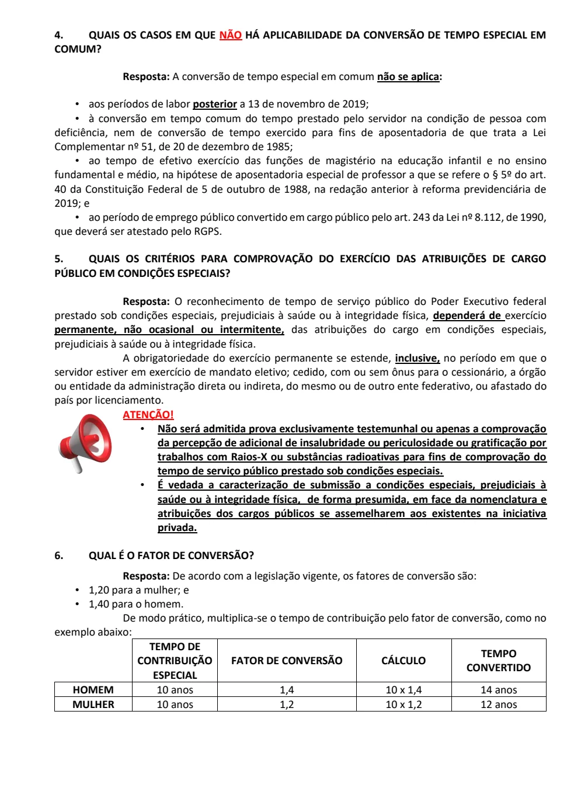
Perguntas frequentes
PDF · p. 44ATENÇÃO!
• Após a conversão de tempo especial em tempo comum, o período acrescido em
decorrência da aplicação dos fatores de conversão SERÁ CONSIDERADO como
tempo de contribuição para fins de elegibilidade à aposentadoria voluntária comum,
nas regras gerais ou de transição, MAS NÃO para o cômputo dos requisitos de tempo
de efetivo exercício no serviço público, de tempo na carreira ou de tempo no cargo
efetivo.
• É VEDADA a soma do tempo comum resultante da conversão de tempo especial em
comum, a qualquer outro tempo de natureza especial não convertido, SENDO
VEDADA também a conversão inversa, de tempo comum em tempo especial, com
vistas, em ambos estes casos, à concessão de aposentadoria voluntária especial.
7. É POSSÍVEL CONVERTER TEMPO ESPECIAL DE SERVIDOR (A) COM DEFICIÊNCIA?
Resposta: Não. Apesar da utilização da mesma nomenclatura para o tempo de contribuição
especial e o tempo de contribuição da pessoa com deficiência, É VEDADA A CONVERSÃO DO TEMPO
ESPECIAL DE SERVIDOR COM DEFICIÊNCIA EM COMUM.
A PREVISÃO LEGAL para este tipo de conversão é EXCLUSIVA para o tempo exercido com
exposição a agentes prejudiciais à saúde.
8. CONVERSÃO DE TEMPO ESPECIAL EM COMUM É A MESMA COISA QUE APOSENTADORIA
ESPECIAL POR EXPOSIÇÃO A AGENTES PREJUDICIAIS À SAÚDE?
Resposta: Não. Na verdade, os dois são opostos: ou o (a) servidor (a) utiliza o tempo de
efetiva exposição como especial para preencher uma Regra de Aposentadoria Especial ou converte aquele
tempo em comum para aposentar por uma Regra Comum.
9. QUAIS DOCUMENTOS DEVEM COMPOR O PROCESSO ADMINISTRATIVO PARA A CONVERSÃO DE TEMPO
ESPECIAL EM COMUM?
Resposta: O processo administrativo para solicitação da conversão de tempo especial em
comum deverá ser INDIVIDUALIZADO e instruído com os seguintes documentos, CUMULATIVAMENTE:
DOCUMENTOS OBSERVAÇÕES OBSERVAÇÕES COMUNS
Formulário de informações (1) ou Perfil
Profissiográfico Previdenciário – PPP (2)
(1) O formulário somente será aceito
quando emitido ATÉ 31 de dezembro de
2003 e será aceito no modelo instituído
para o RGPS, s egundo o seu período de
vigência, sob as siglas: SB-40, DISESBE
5235, DSS-8030 ou DIRBEN 8030
(2) Conforme Anexo V da Portaria
SGP/SEDGG/ME nº 10.360, de 6 de
dezembro de 2022 ou Anexo A do Caderno
de Orientação - Averbação do Tempo de
Serviço/Contribuição e C onversão de
Tempo Especial em Comum - MÓDULO
SERVIDOR - DAP-06.021
Atenção! Tanto o PPP quanto o formulário,
podem ser emitidos pelo técnico
responsável pelo assentamento funcional
digital, ou seja, o servidor civil da Seção
Regional de Pessoal Civil da OM poderá
emitir um ou outro.
Apesar de a sua elaboração ser
permitida ao servidor civil, o
médico com especialização em
medicina do trabalho,
engenheiro ou arquiteto com
especialização em segurança do
trabalho poderão elaborar este
documento, desde que atenda
os critérios da Portaria
SGP/SEDGG/ME nº 10.360, de 6
de dezembro de 2022.
Ver página original — tabelas, imagens e diagramas
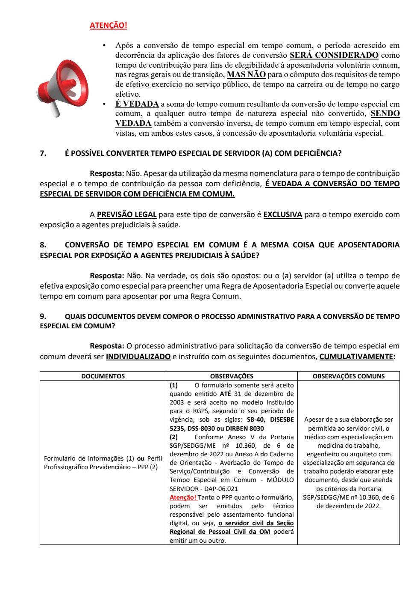
Perguntas frequentes
PDF · p. 45Parecer da perícia médica, em relação ao
enquadramento por exposição a agentes
nocivos
Sem modelo específico, a critério do perito
em segurança do trabalho (médico com
especialização em medicina do trabalho,
engenheiro ou arquiteto com
especialização em segurança do trabalho).
Poderá ser elaborado pelo
mesmo profissional que emitiu o
LTCAT
Laudo Técnico de Condições Ambientais
do Trabalho - LTCAT
a) Será elaborado por servidor
público da esfera federal, estadual, distrital
ou municipal, ou militar, ocupante de cargo
público ou posto militar de médico com
especialização em medicina do trabalho,
ou de engenheiro ou de arquiteto com
especialização em segurança do trabalho.
b) O enquadrame nto de atividade
especial por exposição ao agente físico
ruído, em qualquer época da prestação do
labor, exige laudo técnico pericial.
c) Em relação aos demais agentes
nocivos, o laudo técnico pericial será
OBRIGATÓRIO para os períodos laborados
a partir de 14 de outubro de 1996.
d) É admitido o laudo técnico emitido
em data anterior ou posterior ao exercício
da atividade do servidor, se não houve
alteração no ambiente de trabalho ou em
sua organização, desde que haja ratificação
nesse sentido, pelo ocupante de c argo
público ou posto militar de médico com
especialização em medicina do trabalho, ou
de engenheiro ou de arquiteto com
especialização em segurança do trabalho.
e) O LTCAT se aplica à unidade (OM)
como um todo e possui validade
intederminada, podendo servir à outras
situações análogas futuras;
f) Poderão ser aceitos em
substituição ao LTCAT, ou ainda de forma
complementar a este, os seguintes
documentos:
1. laudos técnico -periciais emitidos
por determinação da Justiça do Trabalho,
em ações trabalhistas, acordos ou dissídios
coletivos;
2. laudos emitidos pela Fundacentro;
3. laudos emitidos pelo Ministério do
Trabalho e Previdência - MTP ou pelas
delegacias Regionais do Trabalho – DRT;
4. laudos técnicos individuais
acompanhados de:
• autorização escrita do órgão
administrativo competente, se o
levantamento ambiental ficar a cargo de
responsável técnico integrante dos quadros
funcionais de outra esfera de Poder da
União ou de governo;
• nome e identificação do servidor
da Administração responsável pelo
acompanhamento do levantam ento
ambiental, quando a emissão do laudo
técnico ficar a cargo de servidor público
pertencente aos quadros funcionais de
outras esferas de governo ou Poder;
Ver página original — tabelas, imagens e diagramas
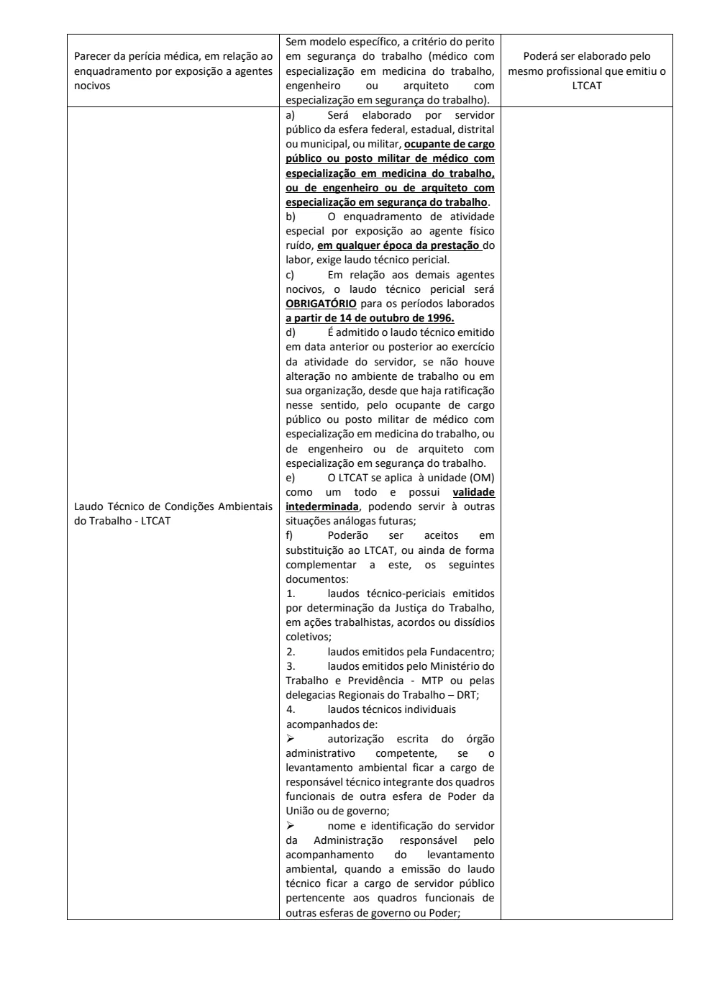
Perguntas frequentes
PDF · p. 46• data e local da realização da
perícia;
• cópia do documento de
habilitação profissional do engenhei ro de
segurança do trabalho ou médico do
trabalho, indicando sua especialidade
5. Demonstrações ambientais
quando constantes dos seguintes
documentos:
• Programa de Prevenção de Riscos
Ambientais – PPRA;
• Programa de Condições e Meio
Ambiente de Trabalho na Ind ústria da
Construção – PCMAT;
• Programa de Gerenciamento de
Riscos – PGR;
• Programa de Controle Médico de
Saúde Ocupacional - PCMSO.
Portaria de nomeação do servidor para
investidura em cargo público efetivo,
cujas atividades sejam análogas às dos
profissionais das categorias
presumidamente sujeitas a condições
especiais
Publicação do Diário Oficial da União (DOU)
Portaria de designação do servidor para
operar com raios X e substâncias
radioativas, quando for o caso.
Publicação do Diário Oficial da União (DOU)
Declaração de Tempo de Atividade
Especial
1. Conforme Anexo C do Caderno de
Orientação - Averbação do Tempo de
Serviço/Contribuição e Conversão de
Tempo Especial em Comum - MÓDULO
SERVIDOR - DAP-06.021
2. Deverá conter os períodos de data
a data trabalhados sob condições especiais
e o cargo ocupado ( não a especialidade ou
atribuições que servidor impactado
desempenha ou desempenhou no período
informado)
10. QUAIS OS DOCUMENTOS NÃO SERÃO ACEITOS PARA FINS DE COMPROVAÇÃO DO TEMPO DE SERVIÇO
PÚBLICO PRESTADO SOB CONDIÇÕES ESPECIAIS:
Resposta:
• laudo relativo à atividade diversa, salvo quando a atividade que se pretende comprovar tiver sido exercida
no mesmo órgão público;
• laudo relativo a órgão público ou equipamentos diversos, ainda que as funções sejam similares; e
• laudo realizado em localidade diversa daquela em que houve o exercício da atividade.
11. OS CUSTOS FINANCEIROS DECORRENTES DA EMISSÃO DE LAUDOS (LTCAT E/OU OUTROS LAUDOS
COMPLEMENTARES OU SUBSTITUTOS) PARA A CONVERSÃO DE TEMPO ESPECIAL EM COMUM, RECAIRÃO SOBRE
O SERVIDOR?
Resposta: Não. Estes custos financeiros recairão sobre a Administração, quais sejam: OM
e Região Militar enquadrante.
Ver página original — tabelas, imagens e diagramas
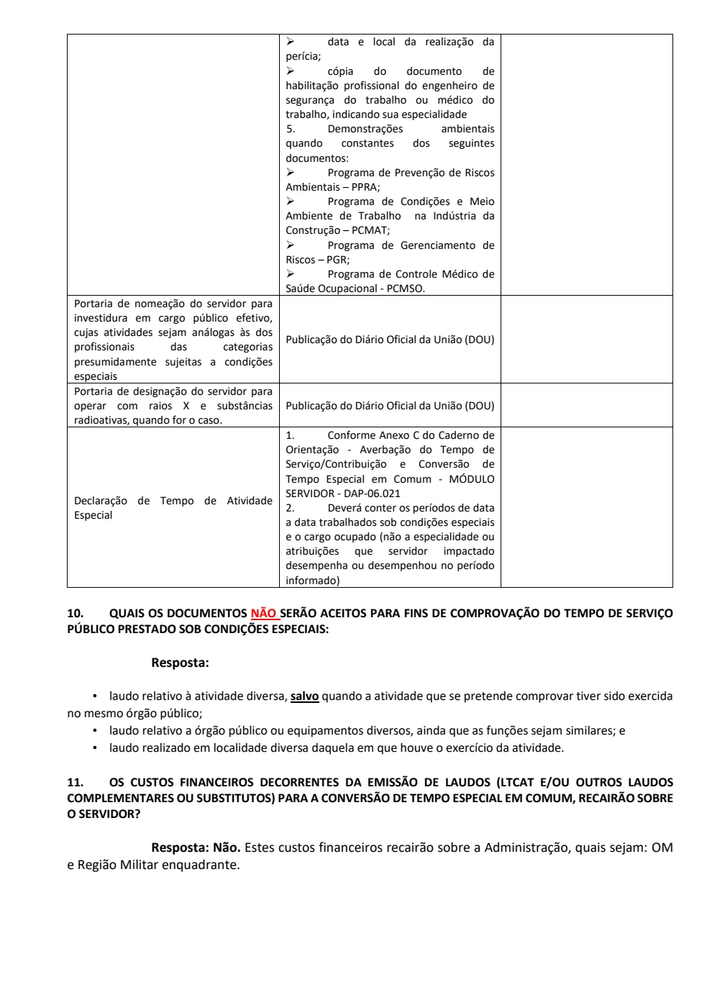
Anexo C — declaração de tempo
PDF · p. 47ANEXO C
Declaração de Tempo de Contribuição/Declaração de Tempo de Atividade Especial
MINISTÉRIO DA DEFESA EXÉRCITO BRASILEIRO
(escalões hierárquicos até a OM expedidora)
(Denominação histórica)
Nº
CERTIDÃO DE TEMPO DE CONTRIBUIÇÃO/DECLARAÇÃO DE TEMPO DE ATIVIDADE ESPECIAL
ÓRGÃO EXPEDIDOR: CNPJ:
NOME DO SERVIDOR:
MAT. SIAPE: CPF: SEXO: DN:
RG: ÓRGÃO EXP.: PIS/PASEP:
FILIAÇÃO:
CARGO EFETIVO:
ÓRGÃO DE LOTAÇÃO:
DATA DE ADMISSÃO: DATA DE EXONERAÇÃO/DEMISSÃO:
PERÍODO DE CONTRIBUIÇÃO COMPREENDICO NESTA CERTIDÃO:
DE ________/_____________/__________a________/_____________/__________
DESTINAÇÃO DO TEMPO DE CONTRIBUIÇÃO:
PERÍODO DE ___/___/____ A ___/___/____ PARA APROVEITAMENTO NO ___(ÒRGÃO A QUE SE DESTINA)____ (CNPJ DO ENTE DESTINATÁRIO)
PERÍODO DE ___/___/____ A ___/___/____ PARA APROVEITAMENTO NO ___(ÒRGÃO A QUE SE DESTINA)____ (CNPJ DO ENTE DESTINATÁRIO)
Ver página original — tabelas, imagens e diagramas
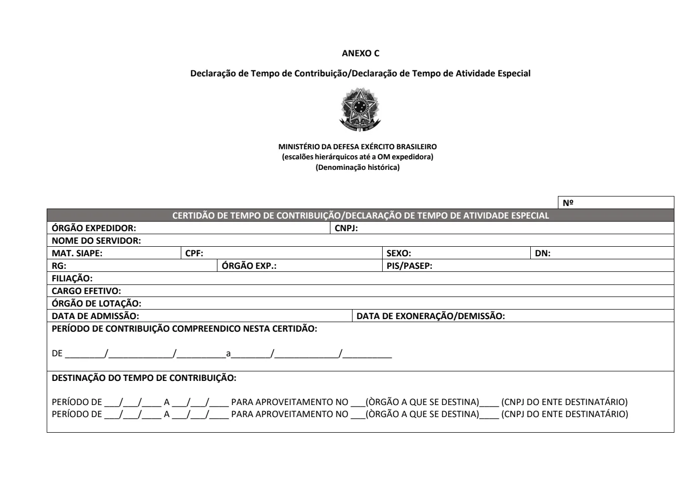
Anexo C — declaração de tempo
PDF · p. 48FREQUÊNCIA
ANO TEMPO
BRUTO
DEDUÇÕES TEMPO
LÍQUIDO FALTAS (*) LICENÇAS (*) LICENÇAS SEM
VENCIMENTO (*) SUSPENSÕES (*) DISPONIBILIDADE (*) OUTRAS (*)
TOTAL EM DIAS
(*) Vide períodos discriminados no verso
CERTIFICO, em face do apurado, que o interessado conta, de efetivo exercício prestado neste Órgão, o tempo de contribuição de ____ dias,
correspondente a ____ anos, ____ meses e ____ dias.
CERTIFICO que a Lei nº ___, de ___/___/___, assegura aos servidores do Estado/Município de __________ aposentadorias voluntárias, por incapacidade
permanente e compulsória, e pensão por morte, com aproveitamento de tempo de contribuição para o Regime Geral de Previdência Social ou para outro
Regime Próprio de Previdência Social.
Lavrei a Certidão, que não contém emendas nem rasuras.
Local e data: __________________________
_________________________
Assinatura do servidor
Nome/Cargo/Matrícula
Visto do Dirigente do Órgão
Data: ____/____/_______
_________________________
Assinatura do servidor
Nome/Cargo/Matrícula
UNIDADE GESTORA DO RPPS
HOMOLOGO a presente Certidão de Tempo de Contribuição e declaro que as informações nela constantes correspondem à verdade.
Local e data: ________________________________________________________________
_______________________________
Assinatura e carimbo do Dirigente da UG
Endereço eletrônico para confirmação desta Certidão: _______________________________
(Redação dada pela Portaria MPS nº 1.180, de 16/04/2024).
Ver página original — tabelas, imagens e diagramas
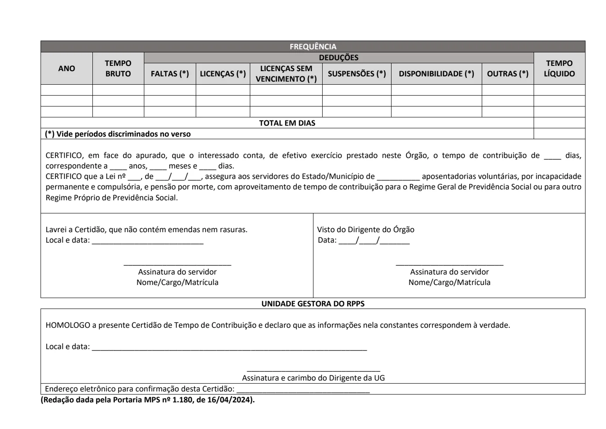
Anexo C — declaração de tempo
PDF · p. 49[Verso da Certidão de Tempo de Contribuição nº _____________]
FREQUÊNCIA - DISCRIMINAÇÃO DAS DEDUÇÕES DO TEMPO BRUTO
PERÍODOS TEMPO EM DIAS IDENTIFICAÇÃO DA OCORRÊNCIA
DE ___/___/____ A ___/___/____
DE ___/___/____ A ___/___/____
DE ___/___/____ A ___/___/____
DE ___/___/____ A ___/___/____
DE ___/___/____ A ___/___/____
DE ___/___/____ A ___/___/____
DE ___/___/____ A ___/___/____
TEMPO ESPECIAL INCLUÍDO, SEM CONVERSÃO, NO PERÍODO DE CONTRIBUIÇÃO COMPREENDIDO
NESTA CERTIDÃO
Especificação do exercício do tempo
especial Período Tempo em dias
I - Na condição de segurado com deficiência:
a) grave DE ___/___/_____ A ___/___/_____
b) moderada DE ___/___/_____ A ___/___/_____
c) leve DE ___/___/_____ A ___/___/_____
II - No cargo de policial, agente
penitenciário ou de agente
socioeducativo.
DE ___/___/_____ A ___/___/_____
III - Em atividades sob condições especia is que prejudiquem a saúde ou a
integridade física ou com efetiva exposição a agentes químicos, físicos e
biológicos prejudiciais à saúde.
a. com redução do tempo para 25 anos DE ___/___/_____ A ___/___/_____
b. com redução do tempo para 20 anos DE ___/___/_____ A ___/___/_____
c. com redução do tempo para 15 anos DE ___/___/_____ A ___/___/_____
TEMPO DE EFETIVO EXERCÍCIO DAS FUNÇÕES DE MAGISTÉRIO NA EDUCAÇÃO INFANTIL E NO
ENSINO FUNDAMENTAL E MÉDIO NO PERÍODO DE CONTRIBUIÇÃO COMPREENDIDO NESTA
CERTIDÃO
Período Tempo em dias
DE ___/___/_____ A ___/___/_____
DE ___/___/_____ A ___/___/_____
DE ___/___/_____ A ___/___/_____
OBSERVAÇÕES:
__________________________
Assinatura do servidor que lavrou a certidão
Nome/Cargo/Matrícula
________________________________
Assinatura do Dirigente do Órgão
Nome/Cargo/Matrícula
(Redação dada pela Portaria MPS nº 1.180, de 16/04/2024)
Ver página original — tabelas, imagens e diagramas
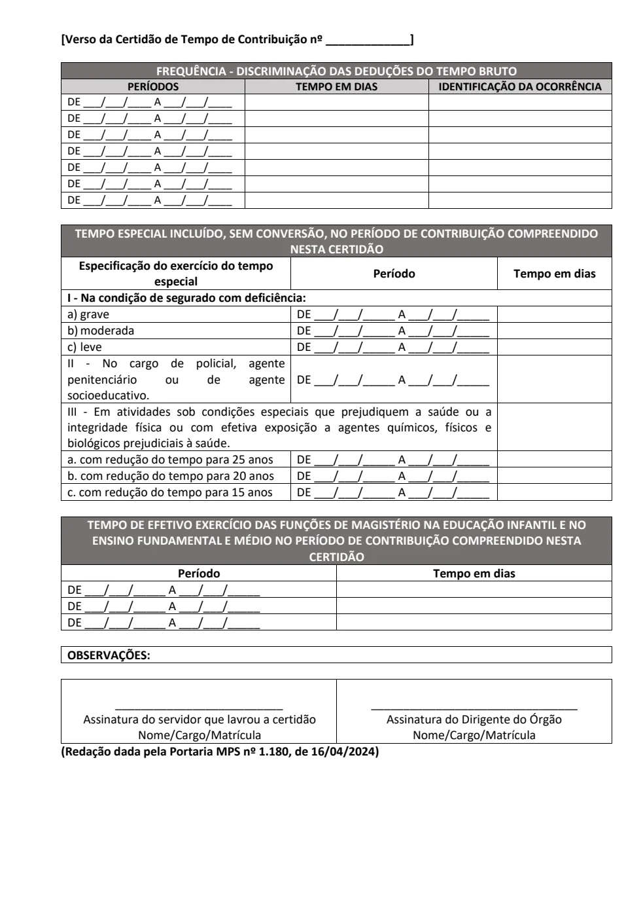